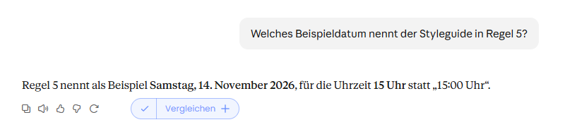
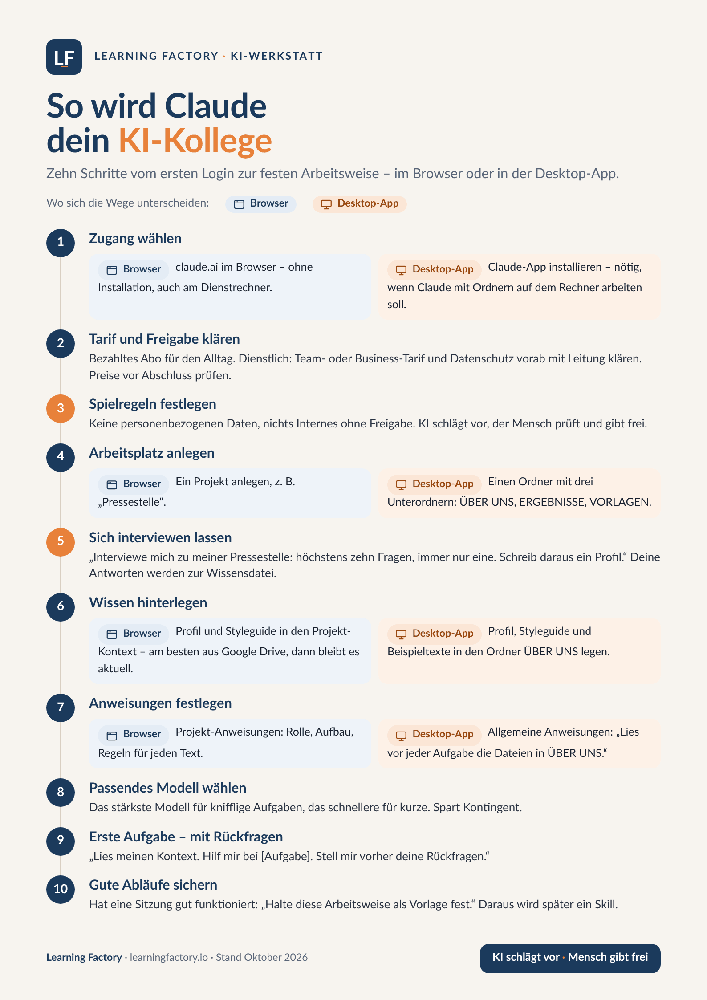

<!doctype html>
<html lang="de">
<head>
<meta charset="utf-8">
<meta name="viewport" content="width=device-width, initial-scale=1, viewport-fit=cover">
<title>KI-Werkstatt Lernpfad</title>
<link rel="preconnect" href="https://fonts.googleapis.com">
<link rel="stylesheet" href="https://fonts.googleapis.com/css2?family=Bricolage+Grotesque:opsz,wght@12..96,600;12..96,800&family=Source+Sans+3:wght@400;600;700&family=JetBrains+Mono:wght@400;600&display=swap">
<style>
/* Layout: Lernpfad mit Seitenleiste (Lektionen) und Arbeitsfläche; Stufenfarben kodieren Chat / Projekt / Agent */
:root{
  --bg:#f3f5f8; --surface:#ffffff; --ink:#18202e; --muted:#5a6578; --line:#d9dee7;
  --accent:#1f4fd1; --accent-soft:#e3eafc;
  --s1:#0e8a7a; --s1-soft:#ddf3ef;   /* Chat */
  --s2:#b86e00; --s2-soft:#fbeed8;   /* Projekt */
  --s3:#6a3fc8; --s3-soft:#ece5fb;   /* Agent */
  --ok:#1b7f3a; --ok-soft:#dff3e5; --bad:#b4232c; --bad-soft:#fbe3e4;
  --f-display:"Bricolage Grotesque", "Segoe UI", system-ui, sans-serif;
  --f-body:"Source Sans 3", "Segoe UI", system-ui, sans-serif;
  --f-mono:"JetBrains Mono", ui-monospace, Consolas, monospace;
}
@media (prefers-color-scheme: dark){:root:not([data-theme="light"]){
  --bg:#10141c; --surface:#181e29; --ink:#e7ebf2; --muted:#9aa5b8; --line:#2b3444;
  --accent:#7ea2ff; --accent-soft:#1d2a4a;
  --s1:#3fc7b3; --s1-soft:#123430; --s2:#f0a83c; --s2-soft:#3a2a10; --s3:#ab8cff; --s3-soft:#2a2045;
  --ok:#5ccf7d; --ok-soft:#173622; --bad:#ff7b82; --bad-soft:#3d1a1d; color-scheme:dark}}
:root[data-theme="dark"]{
  --bg:#10141c; --surface:#181e29; --ink:#e7ebf2; --muted:#9aa5b8; --line:#2b3444;
  --accent:#7ea2ff; --accent-soft:#1d2a4a;
  --s1:#3fc7b3; --s1-soft:#123430; --s2:#f0a83c; --s2-soft:#3a2a10; --s3:#ab8cff; --s3-soft:#2a2045;
  --ok:#5ccf7d; --ok-soft:#173622; --bad:#ff7b82; --bad-soft:#3d1a1d; color-scheme:dark}
*{box-sizing:border-box}
body{background:var(--bg);color:var(--ink);font-family:var(--f-body);font-size:17px;line-height:1.6}
.app{display:grid;grid-template-columns:270px minmax(0,1fr);min-height:100vh}
aside{background:var(--surface);border-right:1px solid var(--line);padding-block:24px;padding-left:max(16px,env(safe-area-inset-left,0px));padding-right:16px;position:sticky;top:0;height:100vh;overflow-y:auto}
.brand{font-family:var(--f-display);font-weight:800;font-size:1.3rem;line-height:1.1;margin:0 0 4px}
.stand{font-family:var(--f-mono);font-size:.72rem;color:var(--muted);margin:0 0 18px}
.prog{height:8px;background:var(--line);border-radius:4px;overflow:hidden;margin-bottom:6px}
.prog>i{display:block;height:100%;background:var(--accent);width:0;transition:width .4s}
.progtxt{font-size:.82rem;color:var(--muted);margin:0 0 18px}
nav ol{list-style:none;margin:0;padding:0;display:grid;gap:4px}
nav a{display:grid;grid-template-columns:28px 1fr auto;gap:8px;align-items:center;padding:8px 10px;border-radius:8px;color:var(--ink);text-decoration:none;font-size:.95rem;line-height:1.25}
nav a:hover{background:var(--bg)}
nav a[aria-current="page"]{background:var(--accent-soft);font-weight:700}
nav .no{font-family:var(--f-mono);font-size:.78rem;color:var(--muted);text-align:center}
nav .done{color:var(--ok);font-weight:700}
nav .min{font-family:var(--f-mono);font-size:.7rem;color:var(--muted)}
main{padding-block:32px 80px;padding-left:max(16px,env(safe-area-inset-left,0px));padding-right:max(16px,env(safe-area-inset-right,0px));min-width:0}
.wrap{max-width:860px;margin:0 auto;display:grid;gap:26px}
.eyebrow{font-family:var(--f-mono);font-size:.78rem;letter-spacing:.08em;text-transform:uppercase;color:var(--accent);margin:0}
h1,h2,h3{font-family:var(--f-display);text-wrap:balance;line-height:1.15;margin:0}
h1{font-size:clamp(1.9rem,4.5vw,2.8rem);font-weight:800}
h2{font-size:1.45rem;font-weight:800}
h3{font-size:1.1rem;font-weight:600}
p{margin:0;max-width:68ch}
.lead{font-size:1.15rem;color:var(--muted)}
section.block{display:grid;gap:12px}
.goal{display:flex;flex-wrap:wrap;gap:10px;font-size:.9rem}
.chip{display:inline-flex;align-items:center;gap:6px;white-space:nowrap;padding:3px 10px;border-radius:99px;background:var(--surface);border:1px solid var(--line);font-size:.85rem}
.c1{background:var(--s1-soft);color:var(--s1);border-color:transparent;font-weight:700}
.c2{background:var(--s2-soft);color:var(--s2);border-color:transparent;font-weight:700}
.c3{background:var(--s3-soft);color:var(--s3);border-color:transparent;font-weight:700}
ul.clean{margin:0;padding-left:1.2em;display:grid;gap:6px;max-width:68ch}
.note{border-left:4px solid var(--accent);background:var(--accent-soft);padding:12px 16px;border-radius:0 8px 8px 0}
.warn{border-left:4px solid var(--s2);background:var(--s2-soft);padding:12px 16px;border-radius:0 8px 8px 0}
.merk{background:var(--surface);border:2px solid var(--ink);border-radius:10px;padding:16px 18px;font-weight:600;font-size:1.05rem}
.merk b{font-family:var(--f-mono);font-size:.75rem;letter-spacing:.08em;text-transform:uppercase;display:block;color:var(--muted);margin-bottom:4px}
.tbl{overflow-x:auto;border:1px solid var(--line);border-radius:10px;background:var(--surface)}
table{border-collapse:collapse;width:100%;min-width:620px;font-size:.92rem}
th,td{text-align:left;padding:10px 12px;border-bottom:1px solid var(--line);vertical-align:top}
th{font-family:var(--f-mono);font-size:.74rem;letter-spacing:.05em;text-transform:uppercase;color:var(--muted);background:var(--bg)}
tr:last-child td{border-bottom:0}
td.num{font-variant-numeric:tabular-nums;white-space:nowrap}
td:first-child{font-weight:700}
.cols{display:grid;grid-template-columns:repeat(auto-fit,minmax(240px,1fr));gap:14px}
.card{background:var(--surface);border:1px solid var(--line);border-radius:10px;padding:16px;display:grid;gap:8px;align-content:start;min-width:0}
.card.t1{border-top:4px solid var(--s1)} .card.t2{border-top:4px solid var(--s2)} .card.t3{border-top:4px solid var(--s3)}
.card small{color:var(--muted)}
pre.copy{position:relative;margin:0;background:var(--bg);border:1px solid var(--line);border-radius:8px;padding:14px 14px 14px 14px;font-family:var(--f-mono);font-size:.84rem;white-space:pre-wrap;word-break:break-word;line-height:1.5}
.cbtn{font-family:var(--f-body);font-size:.8rem;font-weight:700;border:1px solid var(--line);background:var(--surface);color:var(--ink);border-radius:6px;padding:4px 10px;cursor:pointer;justify-self:start}
.cbtn:hover{border-color:var(--accent)}
.prompt{display:grid;gap:6px}
.steps{list-style:none;margin:0;padding:0;display:grid;gap:10px}
.steps>li{display:grid;grid-template-columns:30px minmax(0,1fr);gap:10px;background:var(--surface);border:1px solid var(--line);border-radius:10px;padding:12px 14px}
.steps>li>input{width:20px;height:20px;margin-top:3px;accent-color:var(--ok)}
.steps>li.checked{border-color:var(--ok);background:var(--ok-soft)}
.steps .stepbody{display:grid;gap:8px;min-width:0}
.bar{display:flex;flex-wrap:wrap;gap:8px;align-items:center;background:var(--surface);border:1px solid var(--line);border-radius:10px;padding:10px 12px;font-size:.88rem}
.bar span{padding:3px 8px;border-radius:6px;border:1px dashed transparent}
.bar .hit{border-color:var(--bad);color:var(--bad);font-weight:700}
.bar .sp{flex:1}
.quiz{background:var(--surface);border:1px solid var(--line);border-radius:12px;padding:18px;display:grid;gap:18px}
.q{display:grid;gap:8px}
.q p{font-weight:700}
.opts{display:grid;gap:6px}
.opt{display:block;text-align:left;width:100%;font:inherit;font-size:.95rem;background:var(--bg);color:var(--ink);border:1px solid var(--line);border-radius:8px;padding:9px 12px;cursor:pointer}
.opt:hover:not(:disabled){border-color:var(--accent)}
.opt.right{background:var(--ok-soft);border-color:var(--ok);color:var(--ok);font-weight:700}
.opt.wrong{background:var(--bad-soft);border-color:var(--bad);color:var(--bad)}
.opt:disabled{cursor:default}
.fb{font-size:.92rem;color:var(--muted)}
.tip{border-left:4px solid var(--ok);background:var(--ok-soft);padding:10px 14px;border-radius:0 8px 8px 0;font-size:.95rem}
.tip b{color:var(--ok)}
.praxis{border:2px solid var(--accent);border-radius:14px;padding:18px;display:grid;gap:16px;background:var(--surface)}
.praxis>h2{display:flex;flex-wrap:wrap;gap:10px;align-items:center}
.path{font-family:var(--f-mono);font-size:.84rem;background:var(--bg);border:1px solid var(--line);border-radius:6px;padding:1px 6px}
.scenario{display:grid;grid-template-columns:auto minmax(0,1fr);gap:14px;align-items:start;background:var(--surface);border:1px solid var(--line);border-radius:12px;padding:16px}
.scenario .seal{width:56px;height:56px;border-radius:50%;border:3px double var(--accent);display:grid;place-items:center;font-family:var(--f-display);font-weight:800;color:var(--accent);font-size:1.4rem}
.shot{position:relative;max-width:100%;border:1px solid var(--line);border-radius:8px;overflow:hidden;background:#fff}
.shot img{display:block;width:100%;height:auto}
.shot .mk{position:absolute;border:3px solid var(--bad);border-radius:6px;pointer-events:none}
.shot .mk span{position:absolute;bottom:calc(100% + 4px);left:50%;transform:translateX(-50%);background:var(--bad);color:#fff;font-size:.72rem;font-weight:700;padding:1px 6px;border-radius:4px;white-space:nowrap}
.fig-shot{margin:0;display:grid;gap:6px}
.fig-shot img{display:block;width:auto;max-width:min(100%,440px);height:auto;border:1px solid var(--line);border-radius:8px}
.fig-shot figcaption{font-size:.85rem;color:var(--muted)}
.dl{background:var(--accent-soft);border-radius:8px;padding:10px 14px;font-size:.95rem}
.dl a{color:var(--accent);font-weight:700}
details.hint{background:var(--surface);border:1px solid var(--line);border-radius:10px}
details.hint summary{cursor:pointer;padding:12px 16px;font-weight:700;color:var(--accent)}
details.hint[open] summary{border-bottom:1px solid var(--line)}
.hintbody{padding:14px 16px;display:grid;gap:12px}
.foot{display:flex;flex-wrap:wrap;gap:12px;justify-content:space-between;align-items:center;border-top:1px solid var(--line);padding-top:20px}
.btn{font:inherit;font-weight:700;border-radius:8px;padding:10px 18px;cursor:pointer;border:1px solid var(--line);background:var(--surface);color:var(--ink);text-decoration:none;display:inline-block}
.btn.primary{background:var(--accent);border-color:var(--accent);color:var(--surface)}
.btn.isdone{background:var(--ok);border-color:var(--ok);color:var(--surface)}
:focus-visible{outline:3px solid var(--accent);outline-offset:2px}
svg text{font-family:var(--f-body)}
.fig{background:var(--surface);border:1px solid var(--line);border-radius:12px;padding:12px;overflow-x:auto}
.fig svg{display:block;min-width:620px;width:100%;height:auto}
.timeline{list-style:none;margin:0;padding:0 0 0 18px;border-left:3px solid var(--s3);display:grid;gap:16px}
.timeline li{position:relative;display:grid;gap:2px}
.timeline li::before{content:"";position:absolute;left:-27px;top:6px;width:15px;height:15px;border-radius:50%;background:var(--surface);border:3px solid var(--s3)}
.timeline time{font-family:var(--f-mono);font-size:.8rem;color:var(--muted)}
.lessonlist{display:grid;gap:10px}
.lessonlist a{display:grid;grid-template-columns:44px minmax(0,1fr) auto;gap:12px;align-items:center;background:var(--surface);border:1px solid var(--line);border-radius:10px;padding:12px 14px;text-decoration:none;color:var(--ink)}
.lessonlist a:hover{border-color:var(--accent)}
.lessonlist .big{font-family:var(--f-display);font-weight:800;font-size:1.5rem;color:var(--accent);text-align:center}
.lessonlist small{color:var(--muted);display:block}
.src{font-size:.82rem;color:var(--muted)}
.src a{color:var(--muted)}
@media (max-width:820px){
  .app{grid-template-columns:1fr}
  aside{position:static;height:auto;border-right:0;border-bottom:1px solid var(--line);padding-right:max(16px,env(safe-area-inset-right,0px))}
  nav ol{grid-auto-flow:column;grid-auto-columns:minmax(150px,1fr);overflow-x:auto;padding-bottom:6px}
}
@media (prefers-reduced-motion:reduce){*{transition:none!important}}
</style>
<style>:root{padding-top:env(safe-area-inset-top,0px);padding-bottom:env(safe-area-inset-bottom,0px)}body{margin:0}img{max-width:100%}[hidden]{display:none!important}</style>
</head>
<body>

<div class="app">
<aside>
  <p class="brand">KI-Werkstatt<br>Lernpfad</p>
  <p class="stand">Begleitmaterial zum Kurs KI in Presse- und Öffentlichkeitsarbeit · Learning Factory · Stand 30.10.2026</p>
  <div class="prog" aria-hidden="true"><i id="progbar"></i></div>
  <p class="progtxt" id="progtxt">0 von 7 Lektionen erledigt</p>
  <nav aria-label="Lektionen"><ol id="nav"></ol></nav>
</aside>
<main><div class="wrap" id="view"></div></main>
</div>

<script>
const LESSONS = [
{id:"l1", min:20, title:"Die drei Stufen", sub:"Chat, Projekt, Agent: Ordnung ins Chaos",
html:`
<p class="eyebrow">Lektion 1 · Theorie 20 Min</p>
<h1>Die drei Stufen</h1>
<p class="lead">Fast alles, was Claude, ChatGPT und Gemini heute anbieten, lässt sich auf drei Stufen zurückführen. Wer die Stufen kennt, kann jedes neue Produkt sofort einordnen.</p>
<div class="goal"><span class="chip">Lernziel: jedes KI-Werkzeug einer Stufe zuordnen</span></div>

<div class="fig" role="img" aria-label="Drei Stufen: Chat, Projekt, Agent. Je höher die Stufe, desto selbstständiger arbeitet die KI.">
<svg viewBox="0 0 760 300" xmlns="http://www.w3.org/2000/svg">
  <line x1="40" y1="270" x2="730" y2="270" stroke="var(--line)" stroke-width="2"/>
  <text x="730" y="292" text-anchor="end" font-size="13" fill="var(--muted)">mehr Selbstständigkeit der KI →</text>
  <rect x="40" y="170" width="200" height="100" rx="10" fill="var(--s1-soft)" stroke="var(--s1)" stroke-width="2"/>
  <text x="140" y="200" text-anchor="middle" font-size="13" font-weight="700" fill="var(--s1)">STUFE 1</text>
  <text x="140" y="226" text-anchor="middle" font-size="22" font-weight="700" fill="var(--ink)">Chat</text>
  <text x="140" y="252" text-anchor="middle" font-size="13" fill="var(--muted)">Du fragst, KI antwortet</text>
  <rect x="270" y="110" width="200" height="160" rx="10" fill="var(--s2-soft)" stroke="var(--s2)" stroke-width="2"/>
  <text x="370" y="140" text-anchor="middle" font-size="13" font-weight="700" fill="var(--s2)">STUFE 2</text>
  <text x="370" y="166" text-anchor="middle" font-size="22" font-weight="700" fill="var(--ink)">Projekt</text>
  <text x="370" y="192" text-anchor="middle" font-size="13" fill="var(--muted)">KI bekommt Rolle</text>
  <text x="370" y="210" text-anchor="middle" font-size="13" fill="var(--muted)">und Wissen</text>
  <text x="370" y="244" text-anchor="middle" font-size="12" fill="var(--s2)">„definierter Mitarbeiter“</text>
  <rect x="500" y="30" width="230" height="240" rx="10" fill="var(--s3-soft)" stroke="var(--s3)" stroke-width="2"/>
  <text x="615" y="58" text-anchor="middle" font-size="13" font-weight="700" fill="var(--s3)">STUFE 3</text>
  <text x="615" y="84" text-anchor="middle" font-size="22" font-weight="700" fill="var(--ink)">Agent</text>
  <text x="615" y="106" text-anchor="middle" font-size="13" fill="var(--muted)">KI arbeitet selbst</text>
  <rect x="515" y="122" width="200" height="62" rx="8" fill="var(--surface)" stroke="var(--s3)"/>
  <text x="615" y="146" text-anchor="middle" font-size="14" font-weight="700" fill="var(--ink)">3a · auf Auftrag</text>
  <text x="615" y="168" text-anchor="middle" font-size="12" fill="var(--muted)">z. B. Claude Code, Codex</text>
  <rect x="515" y="196" width="200" height="62" rx="8" fill="var(--surface)" stroke="var(--s3)"/>
  <text x="615" y="220" text-anchor="middle" font-size="14" font-weight="700" fill="var(--ink)">3b · von sich aus</text>
  <text x="615" y="242" text-anchor="middle" font-size="12" fill="var(--muted)">z. B. Duet, dots, Spark</text>
</svg></div>

<section class="block">
<h2>Das Bild vom Mitarbeiter</h2>
<p>Stell dir die KI als neuen Mitarbeiter vor. Mit jeder Stufe gibst du ihm mehr Verantwortung, und mit jeder Stufe wird deine Rolle als Auftraggeber und Prüfer wichtiger.</p>
<div class="tbl"><table>
<thead><tr><th>Stufe</th><th>Bild</th><th>Wer handelt?</th><th>Beispiel Pressestelle</th></tr></thead>
<tbody>
<tr><td><span class="chip c1">1 Chat</span></td><td>Aushilfe, die man kurz fragt</td><td>Du kopierst und setzt um</td><td>„Formuliere diesen Satz freundlicher.“</td></tr>
<tr><td><span class="chip c2">2 Projekt</span></td><td>Redaktionsassistent mit Handakte</td><td>Du kopierst, KI kennt die Regeln</td><td>Pressemitteilung im Hausstil schreiben</td></tr>
<tr><td><span class="chip c3">3a Agent</span></td><td>Sachbearbeiter mit Zugriff auf die Ablage</td><td>KI legt Dateien an, du gibst frei</td><td>40 Mitteilungen auf Styleguide prüfen</td></tr>
<tr><td><span class="chip c3">3b Agent</span></td><td>Assistenz im Vorzimmer</td><td>KI meldet sich selbst, du gibst frei</td><td>„Drei Presseanfragen sind noch offen.“</td></tr>
</tbody></table></div>
</section>

<div class="merk"><b>Merksatz</b>Je höher die Stufe, desto mehr arbeitet die KI selbst. Die Verantwortung bleibt immer bei dir.</div>

<section class="block">
<h2>Aufgabe (5 Minuten)</h2>
<p>Notiere drei KI-Aufgaben aus deinem Alltag. Ordne jede einer Stufe zu. Frage dich: Würde eine höhere Stufe Zeit sparen, und was müsste ich dann prüfen?</p>
<details class="hint"><summary>Beispiel anzeigen: Pressestelle der (fiktiven) Stadt Lindenau</summary>
<div class="hintbody">
<p>Jana arbeitet in der Pressestelle der Stadt Lindenau. Sie hat drei Aufgaben notiert:</p>
<div class="tbl"><table>
<thead><tr><th>Aufgabe</th><th>Stufe heute</th><th>Höhere Stufe sinnvoll?</th><th>Was muss Jana dann prüfen?</th></tr></thead>
<tbody>
<tr><td>Einen holprigen Satz im Grußwort des Bürgermeisters glätten</td><td><span class="chip c1">1 Chat</span></td><td>Nein. Einmalig, in einer Minute erledigt.</td><td>Ob der Sinn erhalten bleibt</td></tr>
<tr><td>Wöchentlich eine Pressemitteilung zum Kulturprogramm schreiben</td><td><span class="chip c1">1 Chat</span></td><td>Ja, <span class="chip c2">2 Projekt</span>: Styleguide und alte Mitteilungen hinterlegen, nicht jede Woche neu erklären.</td><td>Fakten, Termine, Namen und Zitate</td></tr>
<tr><td>Jeden Montag aus der Veranstaltungsliste (40 Termine) Social-Media-Entwürfe erstellen</td><td><span class="chip c2">2 Projekt</span></td><td>Ja, <span class="chip c3">3a Agent</span>: Claude Code liest die Liste und legt je Termin eine Datei an.</td><td>Stichproben der Entwürfe; nichts geht ohne ihre Freigabe raus</td></tr>
</tbody></table></div>
<p><strong>Janas Fazit:</strong> Die größte Zeitersparnis bringt Aufgabe 3. Dafür muss sie den Ordner sauber anlegen und ihre Prüfrolle ernst nehmen.</p>
</div></details>
</section>`,
quiz:[
 {q:"Du lädst deinen Styleguide hoch und gibst der KI feste Anweisungen. Welche Stufe ist das?", o:["Stufe 1: Chat","Stufe 2: Projekt","Stufe 3: Agent"], a:1, e:"Rolle plus Wissen = Projekt. Die KI arbeitet aber noch nicht selbst in deinen Dateien."},
 {q:"Was unterscheidet Stufe 3b von Stufe 3a?", o:["3b ist schneller","3b meldet sich von selbst, ohne dass du fragst","3b kann nur programmieren"], a:1, e:"Proaktive Agenten wie Claude Duet melden sich von sich aus, zum Beispiel mit einer Morgenübersicht."},
 {q:"Wer trägt bei einem Agenten die Verantwortung für das Ergebnis?", o:["Der Agent","Der Anbieter","Du als Auftraggeber"], a:2, e:"Agenten fragen vor kritischen Schritten um Freigabe. Prüfen und freigeben bleibt deine Aufgabe."}
]},

{id:"l2", min:25, title:"Die Claude-Familie", sub:"Chat, Projekt, Code-Tab, CLI, Duet",
html:`
<p class="eyebrow">Lektion 2 · Theorie 25 Min</p>
<h1>Die Claude-Familie</h1>
<p class="lead">Bei Claude tragen die drei Stufen eigene Namen. Hier ordnest du sie ein und lernst, wo du den „Mitarbeiter“ jeweils definierst.</p>
<div class="goal"><span class="chip">Lernziel: Projekt, Claude Code und Duet unterscheiden</span></div>

<div class="cols">
 <div class="card t1"><span class="chip c1">Stufe 1</span><h3>Chat-Tab</h3><p>Normales Gespräch in der App, im Browser oder auf dem Handy.</p></div>
 <div class="card t2"><span class="chip c2">Stufe 2</span><h3>Projekte</h3><p>Arbeitsbereich mit Anweisungen und Wissensdateien. Jeder Chat im Projekt kennt diese Vorgaben.</p><small>Kein Zugriff auf deinen Rechner</small></div>
 <div class="card t3"><span class="chip c3">Stufe 3a</span><h3>Claude Code</h3><p>Arbeitet in einem Ordner auf deinem Rechner: Dateien anlegen, ändern, Programme ausführen.</p><small>Desktop-App (Code-Tab), Terminal (CLI), Web</small></div>
 <div class="card t3"><span class="chip c3">Stufe 3b</span><h3>Claude Duet</h3><p>Eigene App seit 21.10.2026. Morgenübersicht, beobachtet verbundene Apps, arbeitet im Hintergrund.</p><small>Research Preview, nur USA, Warteliste</small></div>
</div>

<section class="block">
<h2>Desktop-App oder CLI?</h2>
<p>Beides ist <strong>derselbe Mitarbeiter</strong>. Die Desktop-App nutzt dieselbe Technik wie die Kommandozeile, nur mit Fenstern und Knöpfen. Für den Einstieg ist der Code-Tab der Desktop-App bequemer, weil du jede Änderung sichtbar freigibst.</p>
<div class="tbl"><table>
<thead><tr><th></th><th>Code-Tab (Desktop)</th><th>CLI (Terminal)</th></tr></thead>
<tbody>
<tr><td>Bedienung</td><td>Klicken, Fenster, Vorschau</td><td>Tippen im Terminal</td></tr>
<tr><td>Start</td><td>App öffnen → Code → Ordner wählen</td><td><code>cd ordner</code>, dann <code>claude</code></td></tr>
<tr><td>Arbeitsanweisung</td><td>CLAUDE.md im Ordner</td><td>CLAUDE.md im Ordner</td></tr>
<tr><td>Für Anfänger</td><td>empfohlen</td><td>später</td></tr>
</tbody></table></div>
</section>

<section class="block">
<h2>Wo definierst du den Mitarbeiter?</h2>
<div class="cols">
 <div class="card t2"><h3>Im Projekt</h3><p>Über die <strong>Projekt-Anweisungen</strong> und hochgeladene Dateien.</p></div>
 <div class="card t3"><h3>In Claude Code</h3><p>Über die Datei <strong>CLAUDE.md</strong> im Projektordner. Claude liest sie bei jedem Start.</p></div>
</div>
<div class="warn"><strong>Achtung:</strong> Projekt-Anweisungen und CLAUDE.md sind getrennt. Was du im Chat-Projekt festlegst, kennt Claude Code nicht automatisch, und umgekehrt auch nicht.</div>
</section>

<section class="block">
<h2>Und Cowork?</h2>
<p>In der Desktop-App gibt es neben Chat und Code den Bereich <strong>Cowork</strong> für längere, mehrschrittige Aufgaben. Diese Fähigkeiten sind inzwischen Teil von Claude selbst. Für diesen Lernpfad konzentrieren wir uns auf Projekt und Code.</p>
</section>

<section class="block">
<h2>Erweiterungen: Claude in deinen Programmen</h2>
<p>Über das Symbol neben deinem Namen (<span class="path">Apps und Erweiterungen holen</span>) kommt Claude in Programme, mit denen du ohnehin arbeitest. Dann kopierst du keine Texte mehr zwischen Chat und Programm hin und her; Claude arbeitet direkt im Dokument, im Postfach oder im Browser.</p>
<details class="hint"><summary>Erweiterungen in der Pressestelle: Beispiele anzeigen</summary><div class="hintbody">
<div class="tbl"><table>
<thead><tr><th>Erweiterung</th><th>Was Claude dort tut</th><th>Beispiel Pressestelle Lindenau</th><th>Wer drückt den letzten Knopf?</th></tr></thead>
<tbody>
<tr><td>Word</td><td>Liest und bearbeitet das geöffnete Dokument</td><td>Entwurf der Pressemitteilung gegen den Styleguide prüfen; Vorschläge erscheinen im Dokument</td><td>Jana nimmt jeden Vorschlag an oder lehnt ihn ab</td></tr>
<tr><td>Outlook (Beta)</td><td>Fasst den Posteingang zusammen, entwirft Antworten</td><td>Montagmorgen: alle Presseanfragen, die mit Redaktionsschluss heute zuerst, Antwortentwürfe bereit</td><td>Jana sendet selbst</td></tr>
<tr><td>PowerPoint</td><td>Erstellt und überarbeitet Folien</td><td>Aus dem Jahresbericht fünf Folien für den Ausschuss</td><td>Jana prüft Zahlen und Aussagen</td></tr>
<tr><td>Excel</td><td>Analysiert Tabellen, erstellt Auswertungen</td><td>Pressespiegel (Datum, Medium, Thema, Tenor): häufigste Themen im Quartal</td><td>Jana prüft die Auswertung stichprobenartig</td></tr>
<tr><td>Chrome</td><td>Bedient Webseiten, klickt, füllt Formulare aus</td><td>Veranstaltung im Termin-Portal der Stadt-Webseite vorbereiten</td><td>Jana klickt auf Veröffentlichen</td></tr>
<tr><td>Desktop-App</td><td>Arbeitet in Ordnern und Dateien auf dem Rechner</td><td>Social-Media-Entwürfe aus der Terminliste (Lektion 4)</td><td>Jana gibt jede Änderung frei</td></tr>
</tbody></table></div>
<div class="warn"><strong>Vor dem Einsatz im Dienst:</strong> Outlook und Chrome sehen echte Postfächer und eingeloggte Konten, etwa die Social-Media-Zugänge der Stadt. Erweiterungen deshalb nur nach Rücksprache mit IT und Datenschutzbeauftragtem installieren, am besten mit Business-Tarif und Auftragsverarbeitungsvertrag (AVV).</div>
<div class="tip"><b>Empfehlung:</b> Senden, Veröffentlichen und Löschen löst immer ein Mensch aus. Das gilt für jede Erweiterung, genau wie bei den Agenten in Lektion 7.</div>
</div></details>
</section>

<div class="merk"><b>Merksatz</b>Im Projekt denkst und schreibst du mit Claude. Im Code-Tab lässt du Claude arbeiten.</div>`,
quiz:[
 {q:"Welche Datei liest Claude Code bei jedem Start als Arbeitsanweisung?", o:["README.md","CLAUDE.md","projekt.txt"], a:1, e:"CLAUDE.md im Projektordner ist die Stellenbeschreibung für Claude Code, in Desktop und CLI gleich."},
 {q:"Sind Claude Code Desktop und Claude Code CLI unterschiedliche Agenten?", o:["Ja, die CLI ist stärker","Nein, gleiche Technik, andere Bedienung","Ja, Desktop kann keine Dateien ändern"], a:1, e:"Gleicher Mitarbeiter, nur andere Art, mit ihm zu sprechen."},
 {q:"Kann ein Claude-Projekt im Chat direkt Dateien auf deinem Rechner ändern?", o:["Ja","Nein"], a:1, e:"Projekte beraten und schreiben. Dateien auf deinem Rechner ändert nur Claude Code."}
]},

{id:"l3", min:30, title:"ChatGPT und Gemini", sub:"Die Gegenstücke im Vergleich",
html:`
<p class="eyebrow">Lektion 3 · Theorie 30 Min</p>
<h1>ChatGPT und Gemini im Vergleich</h1>
<p class="lead">Alle drei Anbieter haben inzwischen Produkte für jede Stufe. Die Namen sind verschieden, die Idee ist dieselbe.</p>
<div class="goal"><span class="chip">Lernziel: Gegenstücke über Anbieter hinweg zuordnen</span></div>

<div class="tbl"><table>
<thead><tr><th>Stufe</th><th>Claude</th><th>ChatGPT (OpenAI)</th><th>Gemini (Google)</th></tr></thead>
<tbody>
<tr><td><span class="chip c1">1 Chat</span></td><td>Claude-App</td><td>ChatGPT-App</td><td>Gemini-App</td></tr>
<tr><td><span class="chip c2">2 Projekt</span></td><td>Projekte</td><td>Projekte, Custom GPTs</td><td>Notebooks, Gems (werden durch Skills ersetzt)</td></tr>
<tr><td><span class="chip c2">2 Wissen</span></td><td>Projektwissen</td><td>Projektdateien</td><td>Gemini Notebook (früher NotebookLM)</td></tr>
<tr><td><span class="chip c3">3a Coding-Agent</span></td><td>Claude Code (Desktop, CLI, Web)</td><td>Codex (in der ChatGPT-Desktop-App, CLI, IDE)</td><td>Antigravity (Desktop, CLI), Jules (Cloud)</td></tr>
<tr><td><span class="chip c3">3b Proaktiv</span></td><td>Claude Duet</td><td>dots</td><td>Gemini Spark</td></tr>
</tbody></table></div>

<section class="block">
<h2>Wichtige Änderungen 2026</h2>
<ul class="clean">
<li><strong>Gemini CLI</strong> wurde am 18.06.2026 für Privatkunden (kostenlos, AI Pro, AI Ultra) eingestellt. Nachfolger ist die <strong>Antigravity CLI</strong>; nur Unternehmenskunden behalten Gemini CLI.</li>
<li><strong>NotebookLM</strong> heißt jetzt <strong>Gemini Notebook</strong>. Notebooks in der Gemini-App sind Projekträume und synchronisieren sich damit.</li>
<li><strong>Gems</strong> werden seit 30.09.2026 schrittweise durch <strong>Skills</strong> ersetzt.</li>
<li>Die <strong>Codex-App</strong> wurde im Juli 2026 mit der ChatGPT-Desktop-App zusammengelegt.</li>
</ul>
</section>

<section class="block">
<h2>Wo liegen die Unterschiede?</h2>
<div class="cols">
 <div class="card"><h3>Claude</h3><p>Starke Trennung: Chat, Cowork und Code als Bereiche in einer Desktop-App. Freigabe-Prinzip sehr sichtbar.</p></div>
 <div class="card"><h3>ChatGPT</h3><p>Alles in einer „Super-App“: Chat, Codex, Agenten. Viele Werkzeuge eingebaut, zum Beispiel Bilder und Sprache.</p></div>
 <div class="card"><h3>Gemini</h3><p>Eng mit Google verbunden: Gmail, Docs, Drive. Coding-Agent läuft als eigenes Produkt (Antigravity).</p></div>
</div>
<div class="note">Das ist eine Orientierung, keine Rangliste. Welches Werkzeug passt, hängt davon ab, wo deine Daten liegen und welche Abos du schon hast.</div>
</section>

<section class="block">
<h2>Aufgabe (10 Minuten)</h2>
<p>Lege bei einem zweiten Anbieter (zum Beispiel ChatGPT) ein Projekt mit denselben Anweisungen an wie bei Claude. Stelle beiden dieselbe Aufgabe. Vergleiche: Was ist ähnlich, was anders?</p>
</section>`,
quiz:[
 {q:"Was ist das Gegenstück zu Claude Code bei OpenAI?", o:["dots","Codex","Custom GPTs"], a:1, e:"Codex ist der Coding-Agent von OpenAI, heute Teil der ChatGPT-Desktop-App und als CLI verfügbar."},
 {q:"Was ersetzt seit Juni 2026 die Gemini CLI für Privatkunden?", o:["Jules","Gemini Notebook","Antigravity CLI"], a:2, e:"Google hat Privatkunden auf die Antigravity CLI umgestellt."},
 {q:"Welches Google-Produkt entspricht am ehesten einem Claude-Projekt?", o:["Notebooks in Gemini","Gemini Spark","Antigravity"], a:0, e:"Notebooks bündeln Chats, Dateien und Anweisungen, genau wie Projekte."}
]},

{id:"l4", min:10, title:"Claude Code in der Praxis", sub:"Erster Auftrag an den Agenten",
html:`
<p class="eyebrow">Lektion 4 · Theorie 10 Min · Praxis</p>
<h1>Claude Code in der Praxis</h1>
<p class="lead">Jetzt arbeitet der Agent. Im Praxisteil richtet Jana den Ordner der Pressestelle ein und lässt Claude Code aus einer Terminliste Social-Media-Entwürfe anlegen. Als Bonus für den Unterricht gibt es das Lernkarten-Quiz.</p>
<div class="goal"><span class="chip">Windows · Desktop-App · Code-Tab</span><span class="chip">Lernziel: planen lassen, freigeben, prüfen</span></div>

<section class="block">
<h2>Vorher: die Leiste unter dem Eingabefeld</h2>
<p>So sieht die Leiste in deinem Code-Tab aus. Die rot markierten Stellen musst du umstellen.</p>
<div class="bar"><span>Dieser Computer</span><span class="hit">📁 wilfr → pressestelle-lindenau</span><span>Worktree</span><span class="sp"></span><span class="hit">Auto → Manuell</span><span>Opus 5.5 · Mittel</span></div>
<p class="src">„wilfr“ ist dein ganzer Benutzerordner. Für die Übung soll Claude nur im Übungsordner arbeiten. „Auto“ lässt Claude selbst über Berechtigungen entscheiden; zum Lernen willst du jeden Schritt sehen.</p>
</section>

<details class="hint"><summary>Bonus für den Unterricht: Lernkarten-Quiz mit Claude Code bauen</summary><div class="hintbody">
<ol class="steps" data-key="steps-l4">
<li><input type="checkbox" id="l4s1" aria-label="Schritt erledigt"><div class="stepbody"><h3>Git für Windows installieren</h3><p>Von git-scm.com, Standardeinstellungen. Danach die Claude-App neu starten.</p></div></li>
<li><input type="checkbox" id="l4s2" aria-label="Schritt erledigt"><div class="stepbody"><h3>Ordner wählen</h3><p>In der Leiste auf „wilfr“ klicken und einen neuen Ordner <code>lernkarten-quiz</code> anlegen und auswählen.</p></div></li>
<li><input type="checkbox" id="l4s3" aria-label="Schritt erledigt"><div class="stepbody"><h3>Modus umstellen</h3><p>Auf „Auto“ klicken und <strong>Manuell</strong> wählen („Immer fragen, bevor Änderungen vorgenommen werden“).</p></div></li>
<li><input type="checkbox" id="l4s4" aria-label="Schritt erledigt"><div class="stepbody"><h3>Erst planen lassen</h3>
<div class="prompt"><pre class="copy">Ich bin Anfänger und möchte Claude Code lernen. Ich möchte eine einfache Lernkarten-App als einzelne HTML-Datei: Frage anzeigen, auf Klick die Antwort aufdecken, dann „gewusst“ oder „nicht gewusst“. Erkläre mir zuerst auf Deutsch, wie du das aufbauen würdest. Schreib noch keinen Code.</pre><button class="cbtn" type="button">Prompt kopieren</button></div></div></li>
<li><input type="checkbox" id="l4s5" aria-label="Schritt erledigt"><div class="stepbody"><h3>Bauen lassen und freigeben</h3>
<div class="prompt"><pre class="copy">Gut, setz das so um. Nutze 5 Beispielkarten zum Thema IT-Grundlagen.</pre><button class="cbtn" type="button">Prompt kopieren</button></div>
<p>Claude fragt, bevor es die Datei anlegt. Lies, was es anlegen will, und klicke dann auf Erlauben.</p></div></li>
<li><input type="checkbox" id="l4s6" aria-label="Schritt erledigt"><div class="stepbody"><h3>Testen</h3><p>Öffne die Datei aus deinem Ordner per Doppelklick im Browser. Funktioniert alles?</p></div></li>
<li><input type="checkbox" id="l4s7" aria-label="Schritt erledigt"><div class="stepbody"><h3>Verbessern lassen</h3>
<div class="prompt"><pre class="copy">Die Karten sollen gemischt werden, und am Ende soll eine Auswertung kommen: wie viele gewusst, wie viele nicht.</pre><button class="cbtn" type="button">Prompt kopieren</button></div></div></li>
<li><input type="checkbox" id="l4s8" aria-label="Schritt erledigt"><div class="stepbody"><h3>Verstehen</h3>
<div class="prompt"><pre class="copy">Erkläre mir die Funktion zum Mischen Zeile für Zeile, so als wäre ich Anfänger.</pre><button class="cbtn" type="button">Prompt kopieren</button></div></div></li>
<li><input type="checkbox" id="l4s9" aria-label="Schritt erledigt"><div class="stepbody"><h3>Mitarbeiter definieren: CLAUDE.md</h3><p>Tippe <code>/init</code>. Ergänze danach selbst:</p>
<div class="prompt"><pre class="copy">Füge in CLAUDE.md diese Regeln hinzu:
- Antworte immer auf Deutsch.
- Erkläre jede Änderung in zwei Sätzen für Anfänger.
- Schlage vor dem Bauen immer erst einen Plan vor.</pre><button class="cbtn" type="button">Prompt kopieren</button></div></div></li>
<li><input type="checkbox" id="l4s10" aria-label="Schritt erledigt"><div class="stepbody"><h3>Sichern mit Git</h3>
<div class="prompt"><pre class="copy">Leg ein Git-Repository an und mach einen Commit mit einer sinnvollen Beschreibung.</pre><button class="cbtn" type="button">Prompt kopieren</button></div></div></li>
</ol>
</div></details>

<section class="block">
<h2>Reflexion (5 Minuten)</h2>
<ul class="clean"><li>Bei welchem Schritt hättest du ohne Freigabe-Frage etwas verpasst?</li><li>Was hat die CLAUDE.md am Verhalten geändert?</li><li>Wie könnten deine Umschüler diese Übung in 45 Minuten schaffen?</li></ul>
</section>`,
quiz:[
 {q:"Warum solltest du den Ordner „wilfr“ gegen einen Übungsordner tauschen?", o:["Weil Claude sonst langsamer ist","Damit Claude nur dort arbeitet und der Rest des Rechners unberührt bleibt","Weil Git das verlangt"], a:1, e:"Der Ordner ist die Werkstatt des Agenten. Klein halten = sicher üben."},
 {q:"Warum zuerst nach einem Plan fragen?", o:["Weil Claude sonst nichts tut","Damit du verstehst und korrigieren kannst, bevor gebaut wird","Weil es Kosten spart"], a:1, e:"Planen vor Bauen ist der wichtigste Anfänger-Trick: du lernst mit und erkennst Missverständnisse früh."}
]},

{id:"l5", min:25, title:"Praxis: Pressearbeit", sub:"Projekt oder Claude Code?",
html:`
<p class="eyebrow">Lektion 5 · Theorie 25 Min · Praxis</p>
<h1>Praxis: Presse- und Öffentlichkeitsarbeit</h1>
<p class="lead">Dieselbe Pressestelle, zwei Mitarbeiter. Faustregel: Ein Text → Projekt. Viele Dateien oder ein wiederkehrender Ablauf → Claude Code.</p>
<div class="goal"><span class="chip">Lernziel: für eine Aufgabe das passende Werkzeug wählen</span></div>

<div class="cols">
<div class="card t2"><span class="chip c2">Projekt</span><h3>Redaktionsassistent</h3>
<ul class="clean"><li>Pressemitteilung aus Stichpunkten</li><li>Drei Social-Media-Varianten</li><li>Interviewvorbereitung mit kritischen Fragen</li></ul>
<small>Ergebnis: Text im Chat, du kopierst ihn</small></div>
<div class="card t3"><span class="chip c3">Claude Code</span><h3>Sachbearbeiter mit Ablage</h3>
<ul class="clean"><li>Aus einer Terminliste je einen Social-Media-Entwurf als Datei</li><li>40 Pressemitteilungen auf Styleguide prüfen</li><li>Pressespiegel-PDFs in eine Tabelle überführen</li></ul>
<small>Ergebnis: neue Dateien in deinem Ordner</small></div>
</div>

<section class="block">
<h2>Vorlage: Projekt-Anweisungen</h2>
<div class="prompt"><pre class="copy">Du bist Redaktionsassistent der Pressestelle [Organisation].
Ton: sachlich, bürgernah, keine Superlative.
Aufbau Pressemitteilung: Überschrift, Unterzeile, Lead mit den W-Fragen, Zitat, Hintergrund, Kontakt.
Zitate nur mit Platzhalter [Zitat Name] – nie selbst erfinden.
Fakten, die nicht in meinen Stichpunkten stehen, markierst du als [prüfen].
Antworte auf Deutsch.</pre><button class="cbtn" type="button">Vorlage kopieren</button></div>
</section>

<section class="block">
<h2>Vorlage: CLAUDE.md für den Pressordner</h2>
<div class="prompt"><pre class="copy"># Pressearbeit – Arbeitsanweisung
## Ordner
- eingang/ : Rohmaterial (Stichpunkte, Terminlisten)
- entwuerfe/ : alle neuen Texte, Dateiname JJJJ-MM-TT_thema.md
- freigegeben/ : nur ich verschiebe Dateien hierher
## Regeln
- Styleguide: sachlich, bürgernah, keine Superlative
- Nie Dateien in freigegeben/ ändern oder löschen
- Erfundene Zitate sind verboten, Platzhalter [Zitat Name]
- Am Ende jeder Aufgabe: kurze Liste, was du angelegt hast</pre><button class="cbtn" type="button">Vorlage kopieren</button></div>
</section>

<div class="warn"><strong>Datenschutz:</strong> Keine personenbezogenen Daten von Bürgern oder internen Vorgängen hochladen, solange keine Freigabe der Organisation vorliegt.</div>`,
quiz:[
 {q:"Du brauchst eine einzelne Pressemitteilung zur Bibliothekseröffnung.", o:["Projekt","Claude Code"], a:0, e:"Ein Text, kein Dateizugriff nötig: Projekt."},
 {q:"Du willst alle 40 Mitteilungen des Jahres auf Styleguide-Verstöße prüfen und eine Liste erhalten.", o:["Projekt","Claude Code"], a:1, e:"Viele Dateien in einem Ordner durcharbeiten: Claude Code."},
 {q:"Jede Woche soll aus der Terminliste je ein Entwurf pro Termin als Datei entstehen.", o:["Projekt","Claude Code"], a:1, e:"Wiederkehrender Ablauf mit Dateien: Claude Code."}
]},

{id:"l6", min:20, title:"Abos und Kosten", sub:"Was kostet welche Stufe?",
html:`
<p class="eyebrow">Lektion 6 · Theorie 20 Min</p>
<h1>Abos und Kosten</h1>
<p class="lead">Monatspreise für Privatkunden in Deutschland, brutto mit Mehrwertsteuer, Stand Herbst 2026. Preise ändern sich oft: vor dem Abschluss im Bestellvorgang prüfen.</p>

<div class="tbl"><table>
<thead><tr><th>Stufe</th><th>ChatGPT</th><th>Claude</th><th>Gemini</th></tr></thead>
<tbody>
<tr><td>Kostenlos</td><td class="num">Free · 0 €</td><td class="num">Free · 0 €</td><td class="num">Free · 0 €</td></tr>
<tr><td>Einstieg</td><td class="num">Go · 7,99 €</td><td>–</td><td>–</td></tr>
<tr><td>Standard</td><td class="num">Plus · 22,99 €</td><td class="num">Pro · ca. 21 € (18 € netto)</td><td class="num">AI Pro · 21,99 €</td></tr>
<tr><td>Power</td><td class="num">Pro 5x · 102,99 €</td><td class="num">Max 5x · ca. 107 € (90 € netto)</td><td class="num">AI Ultra · ca. 100 $ *</td></tr>
<tr><td>Top</td><td class="num">Pro 20x · 229 €</td><td class="num">Max 20x · ca. 180–215 €</td><td class="num">ca. 200 $ *</td></tr>
</tbody></table></div>
<p class="src">* Google hat AI Ultra im Mai 2026 auf 100 $ gesenkt und eine 200-$-Stufe eingeführt; Euro-Preise auf one.google.com prüfen.</p>

<section class="block">
<h2>Was bekommst du für unser Thema?</h2>
<div class="tbl"><table>
<thead><tr><th>Funktion</th><th>ChatGPT</th><th>Claude</th><th>Gemini</th></tr></thead>
<tbody>
<tr><td><span class="chip c2">Projekte</span></td><td>auch kostenlos</td><td>auch kostenlos</td><td>Notebooks auch kostenlos</td></tr>
<tr><td><span class="chip c3">Coding-Agent</span></td><td>Codex ab Plus</td><td>Claude Code ab Pro</td><td>Antigravity, Kontingent je nach Abo</td></tr>
<tr><td><span class="chip c3">Proaktiver Agent</span></td><td>dots: Pro (nicht im EWR) und Business Premium</td><td>Duet: Pro/Max, nur USA, Warteliste</td><td>Spark: AI Ultra, USA</td></tr>
</tbody></table></div>
</section>

<details class="hint"><summary>Anmerkung: Projekt oder Agent – was verbraucht mehr?</summary><div class="hintbody">
<p>In Euro kostet beides gleich viel: Im Abo zahlst du keinen Aufpreis pro Nutzung. Unterschiedlich ist, wie schnell du dein <strong>Nutzungskontingent</strong> verbrauchst, also an das 5-Stunden- oder Wochenlimit kommst.</p>
<div class="cols">
<div class="card t2"><h3>Projekt mit Kontext</h3><p>Pro Antwort liest Claude einmal Anweisungen, Kontext-Dateien und den bisherigen Chat. Bei kleinen Dateien ist das wenig. Bei sehr viel Projektwissen sucht Claude nur die passenden Stellen heraus.</p></div>
<div class="card t3"><h3>Agent (Claude Code)</h3><p>Arbeitet in vielen Einzelschritten: Ordner ansehen, Datei öffnen, planen, schreiben, prüfen. Jeder Schritt ist ein eigener Durchgang, und der bisherige Verlauf wird jedes Mal mitgelesen.</p></div>
</div>
<div class="tbl"><table><thead><tr><th>Aufgabe</th><th>Sparsamer</th><th>Warum</th></tr></thead><tbody>
<tr><td>Eine Pressemitteilung schreiben</td><td><span class="chip c2">Projekt</span></td><td>Ein Durchgang, das Wissen liegt schon bereit</td></tr>
<tr><td>Mehrere Varianten zu einem Text</td><td><span class="chip c2">Projekt</span></td><td>Alles im selben Chat</td></tr>
<tr><td>40 Mitteilungen prüfen</td><td><span class="chip c3">Agent</span></td><td>Im Projekt müsstest du alles einzeln hochladen und die Ergebnisse von Hand speichern</td></tr>
<tr><td>Jede Woche Entwürfe aus der Terminliste</td><td><span class="chip c3">Agent</span></td><td>Legt die Dateien selbst an und spart deine Arbeitszeit</td></tr>
</tbody></table></div>
<div class="merk"><b>Faustregel</b>Das Projekt spart Kontingent, der Agent spart Arbeitszeit.</div>
<ul class="clean">
<li>Im Kontext nur das, was wirklich gebraucht wird: zwei gute Beispiele statt zwanzig.</li>
<li>Für ein neues Thema einen neuen Chat starten. Lange Chats werden mit jeder Nachricht teurer.</li>
<li>Den Verbrauch unter <span class="path">Einstellungen</span> → <span class="path">Nutzung</span> im Blick behalten (Praxisschritt 6.2).</li>
</ul>
</div></details>

<section class="block">
<h2>Tipps für Selbstständige</h2>
<ul class="clean">
<li>Im Web abschließen, nicht im App Store: dort ist es teurer und es gibt keine Netto-Rechnung.</li>
<li>Bei Claude zeigt der Web-Checkout Euro-Preise nur mit deutscher Rechnungsadresse.</li>
<li>Proaktive Agenten verbrauchen das normale Nutzungskontingent mit, auch für Hintergrundprüfungen.</li>
</ul>
</section>
<div class="merk"><b>Merksatz</b>Für diesen Lernpfad reicht ein Standard-Abo um 21–23 € bei einem Anbieter. Zum Vergleichen genügen die kostenlosen Stufen der anderen.</div>`,
quiz:[
 {q:"Ab welchem Claude-Abo ist Claude Code enthalten?", o:["Free","Pro","Nur Max"], a:1, e:"Claude Code setzt ein bezahltes Abo voraus, ab Pro."},
 {q:"Warum lieber im Web statt im App Store abschließen?", o:["Mehr Funktionen","Günstiger und mit Netto-Rechnung","Schnellere Antworten"], a:1, e:"Der App Store schlägt auf und stellt keine Netto-Rechnung für Selbstständige aus."}
]},

{id:"l7", min:20, title:"Ausblick und Abschluss", sub:"Proaktive Agenten und Abschlussquiz",
html:`
<p class="eyebrow">Lektion 7 · Theorie 20 Min</p>
<h1>Ausblick: Agenten, die sich selbst melden</h1>
<p class="lead">2026 haben alle großen Anbieter proaktive Agenten vorgestellt. Sie laufen auf eigenen Cloud-Computern weiter, auch wenn du die App schließt.</p>

<ol class="timeline">
<li><time>19.05.2026</time><strong>Google: Gemini Spark</strong><span>persönlicher Agent rund um die Uhr, für AI Ultra</span></li>
<li><time>08.09.2026</time><strong>Meta: Muse</strong><span>persönlicher Agent, zunächst USA</span></li>
<li><time>29.09.2026</time><strong>OpenAI: dots</strong><span>Agenten mit eigenem Cloud-Computer, über 4.000 Apps</span></li>
<li><time>21.10.2026</time><strong>Anthropic: Claude Duet</strong><span>Morgenübersicht, Aufgaben, Freigaben; Research Preview</span></li>
</ol>

<section class="block">
<h2>Was alle gemeinsam haben</h2>
<div class="cols">
 <div class="card t3"><h3>Freigabe</h3><p>Vor Senden, Bezahlen, Unterschreiben oder Löschen fragen sie nach.</p></div>
 <div class="card t3"><h3>Hintergrund</h3><p>Sie prüfen verbundene Apps in Abständen und melden sich nur bei Bedarf.</p></div>
 <div class="card t3"><h3>Grenzen</h3><p>Sie können Dringlichkeit falsch einschätzen. Prüfen bleibt nötig.</p></div>
</div>
<div class="note">In Deutschland sind diese Agenten Stand heute für Privatkunden kaum nutzbar. Für den Unterricht eignen sie sich als Ausblick; geübt wird mit Projekt und Claude Code.</div>
</section>

<section class="block">
<h2>Abschlussquiz</h2>
<p>Teste dich über alle Lektionen hinweg.</p>
</section>`,
quiz:[
 {q:"Welche Reihenfolge stimmt, von wenig zu viel Selbstständigkeit?", o:["Agent, Projekt, Chat","Chat, Projekt, Agent","Projekt, Chat, Agent"], a:1, e:"Chat → Projekt → Agent."},
 {q:"Was ist Claude Duet?", o:["Ein Coding-Agent im Terminal","Ein proaktiver Agent in einer eigenen App","Ein neues Sprachmodell"], a:1, e:"Duet meldet sich von selbst und arbeitet im Hintergrund."},
 {q:"Wo legst du für Claude Code die Arbeitsanweisung ab?", o:["In den Projekt-Anweisungen","In CLAUDE.md im Ordner","In den Kontoeinstellungen"], a:1, e:"CLAUDE.md im Projektordner."},
 {q:"Gegenstück zu Claude-Projekten bei Google?", o:["Notebooks","Spark","Jules"], a:0, e:"Notebooks bündeln Chats, Dateien und Anweisungen."},
 {q:"Du sollst 60 PDF-Pressespiegel in eine Tabelle überführen. Welches Werkzeug?", o:["Chat","Projekt","Claude Code"], a:2, e:"Viele Dateien verarbeiten und eine Datei erzeugen: Agent."},
 {q:"Was gilt bei allen Agenten?", o:["Sie arbeiten fehlerfrei","Die Verantwortung bleibt beim Menschen","Sie brauchen keine Freigaben"], a:1, e:"Agenten fragen vor kritischen Schritten, prüfen musst du trotzdem."}
]}
];

/* ---------- Praxis: Pressestelle Lindenau ---------- */
const P=(t,l="Prompt kopieren")=>`<div class="prompt"><pre class="copy">${t}</pre><button class="cbtn" type="button">${l}</button></div>`;
/* Vergleichsbilder: Datei img/<schritt-id>.png eintragen, sobald vorhanden */
const SHOTS={
  p4s3:[{f:"img/modus.png",cap:"Die Modus-Liste unten rechts im Code-Tab: Manuell wählen"}],
  p2c1:[{f:"img/p2c1.png",cap:"Das Plus-Menü im Eingabefeld, hier mit eingeschalteter Recherche (Häkchen)"}],
  p2c2:[{f:"img/p2c2.png",cap:"Konnektoren mit Schaltern: pro Chat nur einschalten, was gebraucht wird"}],
  p2c4:[{wide:1,f:"img/p2c4.png",cap:"+ → Skills: verfügbare Skills, darunter skill-creator. Rot markiert unten: das Recherche-Symbol, solange Recherche eingeschaltet ist."}],
  p2s7:[{f:"img/p2s7.png",cap:"Instagram-Text mit rund 400 Zeichen und drei Hashtags, dazu der Newsletter-Satz. Die [prüfen]-Markierungen werden übernommen."}],
  p2s6:[{f:"img/p2s6.png",cap:"Ergebnis mit [prüfen]-Markierungen, Zitat-Platzhalter und einer Liste der offenen Punkte"}],
  p2s4:[{f:"img/p2s4.png",cap:"Das Menü bei Kontext → Hinzufügen: hochladen, Text einfügen oder aus verbundenen Diensten"},{wide:1,f:"img/p2s4b.png",cap:"Geschafft: Bei Kontext steht „2 Dateien“."},{f:"img/p2s4c.png",cap:"Antwort auf die Kontrollfrage: Claude nennt Abschnitt 5 des Styleguides und die Tabelle „Häufige Fehler“."}],
  p2s3:[{wide:1,f:"img/p2s3.png",cap:"Die Projektseite: rechts Anweisungen (Schritt 2.3) und Kontext (Schritt 2.4), jeweils mit Hinzufügen"},{wide:1,f:"img/p2s3b.png",cap:"Geschafft: Bei Anweisungen steht jetzt „Bearbeiten“. Darüber änderst du sie später."}],
  p2s2:[{f:"img/p2s2.png",cap:"Das ausgefüllte Fenster Projekt erstellen. Kontext bleibt leer."}],
  p1s2:[{f:"img/p1s2a.png",cap:"Unten links: dein Name mit Tarif. Darauf klicken, um das Menü zu öffnen."},{f:"img/p1s2b.png",cap:"Das Fenster Einstellungen mit den Bereichen links, hier geöffnet: Allgemein"},{f:"img/p1s2c.png",cap:"Apps und Erweiterungen holen: Microsoft 365, Chrome und Desktop-App"}],
  p1s1:[{f:"img/p1s1.png",cap:"Anmeldeseite von claude.ai mit Google, Apple, E-Mail und dem Knopf für die Desktop-App"}],
};
const SHOT=id=>SHOTS[id]?`<details class="hint"><summary>Vergleichsbild anzeigen</summary><div class="hintbody">${SHOTS[id].map(x=>`<figure class="fig-shot"><figcaption>${x.cap}</figcaption></figure>`).join("")}<p class="src">Dein Bildschirm kann leicht abweichen: Die App wird laufend aktualisiert, und KI-Antworten fallen jedes Mal etwas anders aus.</p></div></details>`:"";
const S=(id,t,b)=>`<li><input type="checkbox" id="${id}" aria-label="Schritt erledigt"><div class="stepbody"><h3>${t}</h3>${b}${SHOT(id)}</div></li>`;
const TIP=t=>`<div class="tip"><b>Empfehlung:</b> ${t}</div>`;

const IMG_START="img/p4s3.png";
const SCENARIO=`<div class="scenario"><div class="seal" aria-hidden="true">L</div><div style="display:grid;gap:6px">
<h3>Das Praxisbeispiel: Pressestelle der Stadt Lindenau</h3>
<p>Lindenau ist eine erfundene Stadt mit rund 48.000 Einwohnern. Die Pressestelle besteht aus zwei Personen. <strong>Jana Albers</strong> ist Pressereferentin und will KI Schritt für Schritt einführen. In jeder Lektion übst du mit ihr. Alle Namen, Termine und Texte sind frei erfunden.</p></div></div>`;

const ANWEISUNG=`Du bist Redaktionsassistent der Pressestelle der Stadt Lindenau.
Halte dich immer an den Styleguide im Kontext. Die Beispiel-Pressemitteilung zeigt dir Aufbau, Länge und Ton.
Aufbau einer Pressemitteilung: Überschrift, Unterzeile, Lead mit den W-Fragen, Zitat, Hintergrund, Kontakt.
Zitate nur mit Platzhalter [Zitat Name] – nie selbst erfinden.
Fakten, die nicht in meinen Stichpunkten stehen, markierst du als [prüfen].
Wenn wichtige Angaben fehlen, frag nach, bevor du schreibst.
Antworte auf Deutsch.`;

const STYLEGUIDE=`Styleguide Pressestelle Lindenau (fiktiv)
1. Wir schreiben sachlich und bürgernah. Keine Superlative (größte, beste, einzigartig).
2. Kurze Sätze, höchstens 20 Wörter.
3. Wir sprechen die Leserinnen und Leser mit „Sie“ an.
4. Wir gendern mit Paarform: Bürgerinnen und Bürger.
5. Datumsformat: Samstag, 14. November 2026. Uhrzeit: 15 Uhr.
6. Zitate stammen nur von realen, freigegebenen Aussagen.
7. Kontakt am Ende: Pressestelle Stadt Lindenau, presse@lindenau.example`;

const ALT_PM=`Beispiel-Pressemitteilung (fiktiv)

Stadtbücherei verlängert Öffnungszeiten am Samstag
Ab März auch nachmittags geöffnet

Lindenau. Die Stadtbücherei Lindenau öffnet ab Samstag, 7. März 2026, auch am Nachmittag. Bürgerinnen und Bürger können dann von 10 bis 16 Uhr Medien ausleihen und den Lesesaal nutzen.

„Viele Familien haben sich längere Öffnungszeiten am Wochenende gewünscht“, sagt Büchereileiterin Petra Sommer.

Die Änderung ist zunächst bis Ende 2026 befristet. Danach wertet die Stadt die Besucherzahlen aus.

Kontakt: Pressestelle Stadt Lindenau, presse@lindenau.example`;

const STICHPUNKTE=`Schreibe eine Pressemitteilung aus diesen Stichpunkten:
- Eröffnung Lesecafé in der Stadtbücherei Lindenau
- Samstag, 14. November 2026, 15 Uhr
- Kaffee und Kuchen vom Inklusionsbetrieb „Zuckerwerk“
- 20 Sitzplätze, kostenloses WLAN, Zeitungen
- Bürgermeister Thomas Brink eröffnet
- Zitat Bürgermeister folgt noch`;

const PRAXIS={
l1:{min:30,html:`<p>Jana richtet ihr Claude-Konto ein und probiert Stufe 1 aus. Die Bezeichnungen in der App können leicht abweichen, die Reihenfolge bleibt gleich.</p>
<ol class="steps">
${S("p1s1","claude.ai aufrufen und anmelden",`<p>Im Browser <span class="path">claude.ai</span> öffnen und anmelden: <span class="path">Mit Google fortfahren</span>, <span class="path">Mit Apple fortfahren</span> oder E-Mail-Adresse eingeben und <span class="path">Mit E-Mail fortfahren</span>. Bei E-Mail bekommst du eine Nachricht mit Anmeldelink oder Code.</p>${TIP("Klicke gleich unten auf <span class='path'>Desktop-App herunterladen</span>. Ab Lektion 4 brauchst du die App für Claude Code. Für dienstliche Arbeit lieber die dienstliche E-Mail-Adresse nutzen als ein privates Google-Konto.")}`)}
${S("p1s2","Einstellungen öffnen",`<p>Unten links auf deinen Namen klicken (zum Beispiel „Wilfried · Pro“), dann <span class="path">Einstellungen</span>. Links siehst du die Bereiche: <span class="path">Allgemein</span>, <span class="path">Konto</span>, <span class="path">Datenschutz</span>, <span class="path">Abrechnung</span>, <span class="path">Nutzung</span>, <span class="path">Funktionen</span>, <span class="path">Gedächtnis</span> und weitere.</p>${TIP("Unter <span class='path'>Allgemein</span> kannst du Design (hell/dunkel) und Textgröße an deine Augen anpassen. Die Sprache sollte auf Deutsch stehen.")}<p>Das kleine Symbol rechts neben deinem Namen (Bildschirm mit Handy) öffnet <span class="path">Apps und Erweiterungen holen</span>: Claude für Microsoft 365 (Excel, PowerPoint, Word, Outlook), für Chrome und die Desktop-App.</p>${TIP("Für diesen Lernpfad brauchst du nur die <strong>Desktop-App</strong>. Erweiterungen für Office oder Chrome im Dienst nur nach Rücksprache mit der IT installieren, denn sie greifen auf Dokumente, Postfach oder Browser zu.")}`)}
${S("p1s3","Profil und Präferenzen",`<p>Im Bereich <span class="path">Allgemein</span> (weiter unten) gibt es ein Feld für persönliche Präferenzen, also dafür, wie Claude dir antworten soll. Dort trägst du Dauerregeln ein, die für alle Chats gelten:</p>${P(`Ich arbeite in der Pressestelle einer Stadtverwaltung und lerne gerade den Umgang mit KI. Antworte auf Deutsch, sachlich und in kurzen Absätzen. Wenn Informationen fehlen, frag nach, statt etwas zu erfinden. Sag mir klar, wenn ich falsch liege oder ein Text Fehler enthält. Keine Superlative und keine Floskeln wie „spannend“ oder „innovativ“.`,"Text kopieren")}${TIP("Sag Claude auch, was es <strong>nicht</strong> tun soll. Verbote wie „keine Superlative“ wirken oft stärker als allgemeine Wünsche wie „schreib gut“. Nur Regeln eintragen, die wirklich immer gelten. Themenspezifisches gehört später in ein Projekt.")}`)}
${S("p1s4","Datenschutz: Modellverbesserung",`<p>Im Bereich <span class="path">Datenschutz</span> findest du den Schalter, ob deine Chats zur Verbesserung von Claude genutzt werden dürfen (englisch „Help improve Claude“).</p>${TIP("Ausschalten, sobald du mit dienstlichen Inhalten arbeitest. Achtung: Daumen-hoch/-runter-Bewertungen werden trotzdem gespeichert.")}`)}
${S("p1s5","Gedächtnis prüfen",`<p>Im Bereich <span class="path">Gedächtnis</span> legst du fest, ob Claude frühere Chats durchsuchen darf und sich Dinge aus deinen Chats merkt.</p>${TIP("Zum Lernen eingeschaltet lassen. Für vertrauliche Tests einen <strong>Inkognito-Chat</strong> nutzen: neuen Chat öffnen und oben rechts auf das Geist-Symbol klicken. Er wird nicht gespeichert.")}`)}
${S("p1s6","Erster Auftrag auf Stufe 1",`<p>Neuen Chat starten und diesen Satz aus einem (fiktiven) Grußwort glätten lassen:</p>${P(`Formuliere diesen Satz aus dem Grußwort von Bürgermeister Thomas Brink freundlicher und kürzer. Der Sinn soll gleich bleiben. Gib mir drei Varianten.

„Seitens der Stadtverwaltung wird hiermit allen Ehrenamtlichen, welche sich im Rahmen des Stadtfestes in vielfältiger Weise eingebracht haben, der ausdrückliche Dank ausgesprochen.“`)}`)}
${S("p1s7","Prüfen und nachsteuern",`<p>Prüfe: Bleibt der Sinn erhalten? Passt der Ton zu einem Bürgermeister? Dann nachsteuern:</p>${P(`Nimm Variante 2, aber etwas förmlicher, und sprich die Ehrenamtlichen direkt an.`)}`)}
${S("p1s8","Das passende Modell wählen",`<p>Unter dem Eingabefeld (oder oben im Chat) steht der Name des Modells. Darüber wechselst du für jeden Chat das Modell. Größere Modelle denken gründlicher, verbrauchen aber mehr von deinem Nutzungskontingent.</p>
<div class="tbl"><table><thead><tr><th>Modell</th><th>Stärke</th><th>Verbrauch</th><th>Beispiel Pressestelle Lindenau</th></tr></thead><tbody>
<tr><td><strong>Haiku</strong></td><td>schnell, kurze Aufgaben</td><td>niedrig</td><td>Einen Satz kürzen, Tippfehler finden, Stichpunkte aus einer Mail ziehen</td></tr>
<tr><td><strong>Sonnet</strong></td><td>Standard für den Alltag</td><td>mittel</td><td>Pressemitteilung aus Stichpunkten, Instagram-Text, Antwort auf eine Presseanfrage</td></tr>
<tr><td><strong>Opus</strong></td><td>gründliches Nachdenken, schwierige Abwägungen</td><td>hoch</td><td>Sprachregelung zu einem heiklen Ratsbeschluss, Fragen und Antworten für ein kritisches Interview</td></tr>
<tr><td><strong>Fable</strong></td><td>das stärkste Modell, lange und komplexe Aufgaben</td><td>am höchsten</td><td>Kommunikationskonzept für ein großes Bauprojekt über mehrere Monate</td></tr>
</tbody></table></div>
<p><strong>Kurzer Vergleich:</strong> Stell denselben Auftrag einmal mit Haiku und einmal mit Opus, jeweils in einem neuen Chat:</p>${P(`Die Sanierung der Lindenauer Grundschule wird ein halbes Jahr später fertig als angekündigt. Formuliere drei Sätze für die Website, die das ehrlich erklären, ohne zu beschwichtigen.`)}<p>Vergleiche: Wo ist der Unterschied groß, wo kaum spürbar? Für einfache Texte reicht oft das kleinere Modell.</p>
${TIP("Sonnet als Standard einstellen und nur bei kniffligen Aufgaben hochschalten. Welche Modelle du siehst, hängt vom Tarif ab: Im kostenlosen Tarif gibt es Haiku und Sonnet, Opus und Fable nur in bezahlten Tarifen. Die Namen bleiben, die Versionsnummern ändern sich regelmäßig.")}`)}
</ol>`},

l2:{min:100,html:`<h2>Teil A: Projekt anlegen (40 Min)</h2>
<p>Jana legt ihr erstes Projekt an. Ab jetzt muss sie Hausstil und Aufbau nicht mehr in jedem Chat erklären.</p>
<ol class="steps">
${S("p2s1","Projekt anlegen",`<p>In der Seitenleiste auf <span class="path">Projekte</span> klicken (oder <span class="path">claude.ai/projects</span> öffnen), dann oben rechts <span class="path">+ Neues Projekt</span>.</p>`)}
${S("p2s2","Projekt benennen",`<p>Im Fenster <span class="path">Projekt erstellen</span>:</p><ul class="clean"><li><strong>Woran arbeitest du?</strong> Pressestelle Lindenau</li><li><strong>Was möchtest du erreichen?</strong> Pressemitteilungen, Social-Media-Texte und Antworten auf Presseanfragen im Hausstil der Stadt Lindenau schreiben. Übungsprojekt mit fiktiven Inhalten.</li><li><strong>Kontext</strong> (optional): Hier kannst du nur <strong>Dateien</strong> hochladen. Für die Übung leer lassen; Styleguide und Beispiel fügst du in Schritt 2.4 hinzu.</li></ul><p>Dann <span class="path">Projekt erstellen</span>.</p><div class="note"><strong>Anmerkung: Warum bleibt Kontext hier leer?</strong><ul class="clean"><li><strong>Im Erstellen-Fenster gehen nur Dateien.</strong> Auf der Projektseite kannst du dagegen auch Text direkt einfügen. Das ist für die Übung bequemer.</li><li><strong>Erst die Rolle, dann das Wissen.</strong> In Schritt 2.3 sagst du Claude, wer es ist und wie es arbeiten soll. Erst danach gibst du in Schritt 2.4 das passende Material dazu.</li><li><strong>Du lernst den Ort kennen, an dem du später pflegst.</strong> Projektwissen änderst du später im Bereich <span class="path">Kontext</span> der Projektseite. Dort übst du es gleich in Schritt 2.4.</li><li><strong>Weniger ist mehr.</strong> Im Alltag lädt man beim Anlegen schnell alles hoch, was irgendwie passt. Ein schlankes, gezielt ausgewähltes Wissen liefert bessere Ergebnisse.</li></ul><p>Später, wenn du schon fertige Dateien hast (zum Beispiel einen Styleguide als PDF), kannst du sie beim Anlegen direkt unter Kontext hochladen.</p></div>${TIP("Name und Ziel helfen dir, Projekte wiederzufinden. Was Claude in jedem Chat sicher beachten soll, gehört in die Projektanweisungen (nächster Schritt).")}`)}
${S("p2s3","Projektanweisungen festlegen",`<p>Auf der Projektseite stehen rechts vier Bereiche: <span class="path">Anweisungen</span>, <span class="path">Kontext</span>, <span class="path">Gedächtnis</span> und <span class="path">Geplant</span>. Bei <span class="path">Anweisungen</span> auf <span class="path">Hinzufügen</span> klicken und diesen Text einfügen:</p>${P(ANWEISUNG,"Anweisungen kopieren")}<p>Nach dem Speichern steht bei Anweisungen <span class="path">Bearbeiten</span> statt Hinzufügen.</p><details class="hint"><summary>Was bedeuten Gedächtnis und Geplant?</summary><div class="hintbody"><p><strong>Gedächtnis</strong> zeigt, was sich Claude aus den Chats in diesem Projekt merkt. <strong>Geplant</strong> ist für Aufgaben, die Claude zu festen Zeiten erledigen soll, zum Beispiel jeden Montag eine Wochenvorschau. Beides brauchst du für diese Übung noch nicht; du übst es in Lektion 7.</p></div></details>`)}
${S("p2s4","Kontext hinzufügen",`<p>Bei <span class="path">Kontext</span> auf <span class="path">Hinzufügen</span> klicken. Es öffnet sich ein Menü mit mehreren Wegen. Für die Übung reichen zwei:</p>
<div class="cols">
<div class="card"><h3>Weg A: Textinhalt hinzufügen</h3><p>Am schnellsten. <span class="path">Textinhalt hinzufügen</span> wählen, einen Text einfügen, speichern. Für den zweiten Text wiederholen.</p>${P(STYLEGUIDE,"Styleguide kopieren")}${P(ALT_PM,"Beispiel-Mitteilung kopieren")}</div>
<div class="card"><h3>Weg B: Vom Gerät hochladen</h3><p>Für fertige Dateien wie PDF oder Word. <span class="path">Vom Gerät hochladen</span> wählen und die Dateien auswählen.</p><div class="dl"><strong>Fertige Übungsdateien:</strong><br><a href="dateien/styleguide-lindenau.pdf" download>styleguide-lindenau.pdf</a><br><a href="dateien/beispiel-pressemitteilung.pdf" download>beispiel-pressemitteilung.pdf</a></div><p class="dl-alt src" hidden>Die fertigen Übungsdateien als PDF gibt es zum Herunterladen in der Version auf doc-tools.org/ki/ki-werkstatt/.</p><p class="src">Bei PDFs prüfen: Lässt sich der Text mit der Maus markieren? Eingescannte Seiten ohne echten Text kann Claude schlechter lesen.</p></div>
</div>
<details class="hint"><summary>Und GitHub, Figma, Drive, Notion?</summary><div class="hintbody"><p>Darüber holst du Dateien direkt aus verbundenen Diensten, ohne sie herunterzuladen. Für eine Pressestelle ist vor allem <strong>Drive</strong> interessant: Liegt der Styleguide als Google Doc in Drive, wählst du ihn hier direkt aus. Voraussetzung ist, dass der Dienst mit deinem Claude-Konto verbunden ist. Im Dienst gilt wieder: erst mit IT und Datenschutz klären.</p><div class="tip"><b>So findest du die Datei:</b> Das Drive-Suchfeld durchsucht nur <strong>Dateinamen</strong>, keine Ordnerpfade. Gib also einen Teil des Namens ein (zum Beispiel „Lindenau“) oder füge den <strong>Link des Google Docs</strong> ein. Der Link klappt auch bei ganz neuen Dateien zuverlässig.</div><div class="tip"><b>Getestet: Drive-Docs bleiben aktuell.</b> Im Styleguide-Doc wurde „Freitag“ durch „Samstag“ ersetzt. Im nächsten neuen Chat kannte Claude die geänderte Fassung, ohne dass das Doc neu hinzugefügt werden musste. Für die Pressestelle heißt das: Den Styleguide als Google Doc pflegen und mit dem Projekt verbinden. Dann gibt es nur eine gültige Fassung.</div><figure class="fig-shot"><figcaption>Nach der Änderung im Google Doc: Claude nennt im neuen Chat das korrigierte Datum.</figcaption></figure></div></details>
<p><strong>Kontrollfrage:</strong> Starte einen neuen Chat im Projekt und prüfe, ob Claude den Kontext wirklich liest:</p>${P(`Welche Regel gilt laut Styleguide für Uhrzeiten?`)}<p>Richtig ist: möglichst ohne Minuten, also „15 Uhr“ statt „15:00 Uhr“. Nennt Claude dazu den Abschnitt im Styleguide, ist alles verbunden.</p>${TIP("Eine gute alte Pressemitteilung ist das beste Stilvorbild. Lieber zwei passende Beispiele als zwanzig gemischte.")}`)}
${S("p2s5","Testauftrag im Projekt",`<p>Im Projekt einen neuen Chat starten:</p>${P(STICHPUNKTE)}
<details class="hint"><summary>Wenn Claude erst nachfragt</summary><div class="hintbody">
<p>Gut so: Die Anweisungen sagen „Wenn wichtige Angaben fehlen, frag nach“. Du hast zwei Möglichkeiten. Am meisten lernst du, wenn du beide nacheinander in getrennten Chats ausprobierst und die Ergebnisse vergleichst.</p>
<div class="cols">
<div class="card"><h3>Weg 1: Claude ergänzen lassen</h3>${P(`Fülle die Lücken nach eigenem Ermessen mit plausiblen Angaben. Markiere alles, was du ergänzt hast, mit [prüfen].`)}</div>
<div class="card"><h3>Weg 2: Angaben selbst liefern</h3>${P(`Hier die fehlenden Angaben:
- Ort: Stadtbücherei Lindenau, Marktplatz 3, Erdgeschoss, barrierefrei erreichbar
- Öffnungszeiten Lesecafé: zu den Öffnungszeiten der Bücherei, Dienstag bis Samstag 10 bis 18 Uhr
- Eintritt frei, keine Anmeldung nötig
- Anlass: Die Bücherei soll ein Treffpunkt für alle Generationen werden
- Der Inklusionsbetrieb „Zuckerwerk“ beschäftigt Menschen mit und ohne Behinderung
- Kontakt für Rückfragen: Pressestelle Stadt Lindenau, presse@lindenau.example
- Zitat Bürgermeister: weiterhin Platzhalter
Bitte schreibe jetzt die Pressemitteilung.`)}</div>
</div>
${TIP("In der echten Pressestelle immer Weg 2: Plausible Erfindungen sehen echt aus, auch wenn sie markiert sind. Weg 1 zeigt dir, wo deine Stichpunkte Lücken haben.")}
</div></details>`)}
${S("p2s6","Ergebnis prüfen",`<ul class="clean"><li>Aufbau wie in der Anweisung?</li><li>Zitat als Platzhalter <code>[Zitat Brink]</code> statt erfunden?</li><li>Ergänzte Fakten mit <code>[prüfen]</code> markiert?</li><li>Datum im Format „Samstag, 14. November 2026“?</li><li>Keine Superlative?</li></ul><div class="note"><strong>Echtes Beispiel aus dem Test:</strong> In einer früheren Fassung dieses Lernpfads stand „Freitag, 14. November 2026“. Claude hat das mit <code>[prüfen: Wochentag/Datum]</code> markiert und erklärt: Der 14. November 2026 ist ein Samstag. Das stimmte. Genau dafür sind die Markierungen da: Sie zeigen dir, wo du nachsehen musst, auch bei Fehlern in deinen eigenen Vorgaben.</div>`)}
${S("p2s7","Weiterverwerten",`${P(`Mach daraus zusätzlich einen Instagram-Text (höchstens 600 Zeichen, 3 Hashtags mit #Lindenau) und einen Satz für den Newsletter.`)}<div class="warn"><strong>Vor dem Veröffentlichen:</strong> Alle <code>[prüfen]</code>-Punkte klären und die Markierungen entfernen. Das kann Claude für dich erledigen, zum Beispiel: „Datum und Einladung sind bestätigt. Entferne die Markierungen in allen drei Texten.“</div>${TIP("Ein Projekt pro Daueraufgabe. Wenn dir eine Formulierung besonders gut gefällt, nimm sie als weiteres Beispiel in den Kontext auf.")}`)}
${S("p2s8","Profil per Interview ergänzen",`<p>Jana sieht beim Test: Den Styleguide kennt Claude jetzt, die Pressestelle selbst aber noch nicht. Wer liest mit? Welche Kanäle gibt es? Was schreibt Lindenau nie? Statt ein Profil selbst zu tippen, lässt sie sich von Claude interviewen. Im Projekt einen neuen Chat starten:</p>${P(`Interviewe mich, damit du unsere Pressestelle besser kennst. Stell mir höchstens zehn Fragen, immer nur eine, und warte jeweils auf meine Antwort. Frag nach Zielgruppen, Kanälen, typischen Themen, Tonfall je Kanal, Freigabewegen und dem, was wir nie schreiben.
Fasse danach alles als „Profil Pressestelle Lindenau“ zusammen: kurze Überschriften, Stichpunkte, höchstens eine Seite. Erfinde nichts. Wenn ich eine Frage auslasse, schreib [offen].`,"Interview-Auftrag kopieren")}
<details class="hint"><summary>Beispielantworten für die Übung (fiktiv)</summary><div class="hintbody"><ul class="clean">
<li><strong>Zielgruppen:</strong> Bürgerinnen und Bürger, Lokalpresse (Lindenauer Anzeiger, Radio Lindenau), Vereine und Ehrenamt</li>
<li><strong>Kanäle:</strong> Website, Instagram, Facebook, monatlicher Newsletter, Aushang im Rathaus</li>
<li><strong>Typische Themen:</strong> Veranstaltungen, Baustellen und Verkehr, Ratsbeschlüsse, Stadtbücherei, Ehrungen</li>
<li><strong>Tonfall:</strong> sachlich und freundlich; auf Instagram etwas lockerer, aber immer in der Sie-Form</li>
<li><strong>Freigabe:</strong> Jana schreibt, die Leitung der Pressestelle gibt frei; Zitate des Bürgermeisters laufen immer über sein Büro</li>
<li><strong>Nie:</strong> Spekulationen zu laufenden Verfahren, Personalangelegenheiten, Parteipolitik, Superlative</li>
</ul></div></details>
<p>Das fertige Profil lesen und korrigieren. Dann auf der Projektseite bei <span class="path">Kontext</span> → <span class="path">Hinzufügen</span> → <span class="path">Textinhalt hinzufügen</span> einfügen und als „Profil Pressestelle Lindenau“ speichern. Liegt dein Kontext in Google Drive, legst du das Profil dort als eigenes Doc ab und verbindest es wie den Styleguide.</p>
<p><strong>Kontrollfrage</strong> in einem neuen Chat im Projekt:</p>${P(`Für welche Kanäle schreiben wir, und welcher Ton gilt auf Instagram?`)}
<div class="warn"><strong>Datenschutz:</strong> Ins Profil gehören Funktionen und Regeln, keine privaten Daten. Statt Namen von Kolleginnen und Kollegen besser „Leitung Pressestelle“ oder „Büro des Bürgermeisters“ schreiben.</div>
<details class="hint"><summary>Und in der Desktop-App?</summary><div class="hintbody"><p>Wer später mit der Desktop-App arbeitet (ab Lektion 4), legt einen Arbeitsordner mit drei Unterordnern an: <strong>ÜBER UNS</strong>, <strong>ERGEBNISSE</strong> und <strong>VORLAGEN</strong>. Das Profil kommt als Datei in ÜBER UNS. In den allgemeinen Anweisungen steht dann: „Lies vor jeder Aufgabe die Dateien in ÜBER UNS.“ Der Gedanke ist derselbe wie im Projekt: erst das Wissen, dann der Auftrag.</p></div></details>
<details class="hint"><summary>Überblick: Claude in zehn Schritten einrichten</summary><div class="hintbody"><p>Die Infografik fasst den Weg vom ersten Login bis zur festen Arbeitsweise zusammen, jeweils für den Browser und die Desktop-App. Zum Ausdrucken für den Workshop oder zum Teilen.</p><figure class="fig-shot"><figcaption>So wird Claude dein KI-Kollege: zehn Schritte, Stand Oktober 2026</figcaption></figure><div class="dl"><strong>Zum Herunterladen:</strong><br><a href="dateien/claude-einrichten-a4.pdf" download>claude-einrichten-a4.pdf</a> (Handout A4)<br><a href="dateien/claude-einrichten-linkedin.png" download>claude-einrichten-linkedin.png</a> (Social Media, 1080 × 1350)</div><p class="dl-alt src" hidden>Handout (PDF) und Social-Media-Fassung gibt es zum Herunterladen in der Version auf doc-tools.org/ki/ki-werkstatt/.</p></div></details>
${TIP("Das Profil regelmäßig auffrischen, zum Beispiel jedes Quartal: „Interviewe mich zu dem, was sich seit dem letzten Profil geändert hat, und aktualisiere es.“")}`)}
</ol>
<h2>Teil B: Erweiterung „Claude für Word“ (30 Min)</h2>
<p>Jana prüft einen fehlerhaften Entwurf direkt in Word. Voraussetzung: Claude-Abo ab Pro und Word aus Microsoft 365 (Windows ab Version 2205) oder Word im Web. Word 2016/2019 als Kauflizenz funktioniert nicht.</p>
<ol class="steps">
${S("p2w1","Erweiterung installieren",`<p>In Claude auf das Symbol neben deinem Namen klicken (<span class="path">Apps und Erweiterungen holen</span>), bei <span class="path">Word</span> auf <span class="path">Installieren</span>. Bei Microsoft AppSource <span class="path">Jetzt herunterladen</span> wählen und mit dem Microsoft-Konto bestätigen.</p>${TIP("Im Dienst: erst IT fragen. Organisationen können die Erweiterung auch zentral verteilen.")}`)}
${S("p2w2","Übungsdokument anlegen",`<p>Neues Word-Dokument, diesen Text einfügen, als <span class="path">lesecafe-entwurf.docx</span> speichern. Er enthält absichtlich sieben Fehler.</p>${P(`Lesecafé eröffnet

Die Stadt Lindenau eröffnet am 14.11.2026 um 15:00 Uhr das schönste Lesecafé der ganzen Region in der Stadtbücherei, wo Bürger ab sofort bei Kaffee und Kuchen vom Inklusionsbetrieb „Zuckerwerk“ an 20 Plätzen Zeitungen lesen und das kostenlose WLAN nutzen können, was ein einzigartiges Angebot für alle ist.

„Das ist ein großartiger Tag für unsere Stadt“, sagt Bürgermeister Thomas Brink.

Kontakt: Pressestelle`,"Übungstext kopieren")}`)}
${S("p2w3","Claude in Word öffnen",`<p>Im Menüband <span class="path">Start</span> → <span class="path">Add-Ins</span> → <span class="path">Claude</span>. Rechts öffnet sich eine Seitenleiste; dort mit dem Claude-Konto anmelden.</p>`)}
${S("p2w4","Dauerregeln für Word",`<p>In der Seitenleiste <span class="path">Einstellungen</span> öffnen und ins Feld <span class="path">Anweisungen</span> eintragen:</p>${P(`Ich arbeite in der Pressestelle der Stadt Lindenau. Regeln: sachlich, keine Superlative, Sätze höchstens 20 Wörter, Paarform (Bürgerinnen und Bürger), Datum „Samstag, 14. November 2026“, Uhrzeit „15 Uhr“, keine erfundenen Zitate, stattdessen [Zitat Name].`,"Regeln kopieren")}${TIP("Diese Anweisungen gelten nur in Word. Projekt, Claude Code und Word haben jeweils eigene Regeln, die du bewusst gleich hältst.")}`)}
${S("p2w5","Fragen an das Dokument",`${P(`Fasse diese Pressemitteilung in zwei Sätzen zusammen. Welche W-Fragen fehlen?`)}<p>Die Antwort enthält anklickbare Verweise, die zur Stelle im Dokument springen.</p>`)}
${S("p2w6","Markierten Text bearbeiten",`<p>Den langen Satz markieren, dann:</p>${P(`Teile diesen Satz in kurze Sätze mit höchstens 20 Wörtern.`)}<p>Claude ändert nur die Markierung; die Formatierung bleibt.</p>`)}
${S("p2w7","Ganzes Dokument mit Nachverfolgung prüfen",`<p>In der Seitenleiste den Modus für Nachverfolgung (tracked changes) einschalten, dann:</p>${P(`Prüfe das ganze Dokument gegen meine Regeln und korrigiere alle Verstöße.`)}`)}
${S("p2w8","Selbst entscheiden",`<p>In Word unter <span class="path">Überprüfen</span> jede Änderung einzeln <span class="path">Annehmen</span> oder <span class="path">Ablehnen</span>.</p>${TIP("Das ist der Kern jeder Erweiterung: Claude schlägt vor, du entscheidest.")}`)}
${S("p2w9","Mit Kommentaren arbeiten",`<p>Das Zitat markieren und einen Word-Kommentar einfügen: <em>„Zitat ist nicht freigegeben, bitte Platzhalter.“</em> Dann in der Seitenleiste:</p>${P(`Arbeite meine offenen Kommentare ab.`)}<p>Claude ändert die Stelle und antwortet im Kommentar, was es getan hat.</p>`)}
${S("p2w10","Ergebnis prüfen",`<p>Hat Claude alle sieben Fehler gefunden?</p>
<details class="hint"><summary>Lösung anzeigen</summary><div class="hintbody"><ol class="clean">
<li>Datumsformat 14.11.2026 statt „Samstag, 14. November 2026“</li>
<li>Uhrzeit 15:00 Uhr statt 15 Uhr</li>
<li>Superlative: schönste, einzigartig, großartig</li>
<li>Satz mit über 50 Wörtern</li>
<li>„Bürger“ statt Paarform</li>
<li>Zitat nicht freigegeben, Platzhalter fehlt</li>
<li>Kontakt unvollständig, Unterzeile fehlt</li></ol></div></details>
<div class="warn"><strong>Sicherheit:</strong> Nur vertrauenswürdige Dokumente mit der Erweiterung bearbeiten. Dateien von außen können versteckte Anweisungen enthalten, die Claude manipulieren sollen. Der Chatverlauf der Erweiterung liegt nur lokal in deinem Browser.</div>`)}
</ol>
<h2>Teil C: Das Plus-Menü (30 Min)</h2>
<p>Das <span class="path">+</span> links im Eingabefeld ist die Werkzeugkiste für einen einzelnen Chat. Jana lernt, was darin steckt, recherchiert Hintergründe und macht aus ihren Regeln einen Skill.</p>
<div class="tbl"><table><thead><tr><th>Eintrag</th><th>Was es tut</th><th>Beispiel Pressestelle Lindenau</th></tr></thead><tbody>
<tr><td>Dateien hochladen</td><td>Eine Datei nur für diesen Chat mitgeben (nicht dauerhaft wie der Kontext)</td><td>Einladung eines Vereins hochladen und daraus eine Meldung machen</td></tr>
<tr><td>Skills</td><td>Gespeicherte Arbeitsanleitungen, die Claude bei passenden Aufgaben anwendet, auch außerhalb des Projekts</td><td>Skill „pressemitteilung-lindenau“ mit festem Aufbau und Prüfschritten</td></tr>
<tr><td>Konnektoren</td><td>Verbindungen zu anderen Diensten, pro Chat ein- und ausschaltbar</td><td>Kalender verbinden, damit Claude Pressetermine sieht</td></tr>
<tr><td>Designsystem</td><td>Farben, Schriften und Regeln für gestaltete Ergebnisse</td><td>Folien und Plakate im Stadt-Design</td></tr>
<tr><td>Plugins</td><td>Fertige Pakete aus Skills, Konnektoren und Befehlen</td><td>Ein Paket für Öffentlichkeitsarbeit, falls die Organisation eins bereitstellt</td></tr>
<tr><td>Recherche</td><td>Gründliche Suche über viele Quellen mit Bericht und Quellenangaben</td><td>Wie haben andere Städte ihr Lesecafé finanziert?</td></tr>
</tbody></table></div>
<ol class="steps">
${S("p2c1","Plus-Menü öffnen",`<p>In einem Chat links im Eingabefeld auf <span class="path">+</span> klicken. Du siehst die Einträge aus der Tabelle.</p>`)}
${S("p2c2","Konnektoren aufräumen",`<p><span class="path">+</span> → <span class="path">Konnektoren</span>. Jeder Konnektor hat einen Schalter. Für Pressestellen-Chats nur einschalten, was gebraucht wird, zum Beispiel <strong>Google Drive</strong> und <strong>Google Calendar</strong>.</p>
<p><strong>Neue Dienste verbinden</strong> (zum Beispiel Gmail, Google Drive oder Notion) geht über die linke Seitenleiste: <span class="path">Anpassen</span> → <span class="path">Konnektoren</span>. Dort meldest du dich einmal beim Dienst an. Danach erscheint er im <span class="path">+</span>-Menü und lässt sich pro Chat ein- und ausschalten.</p>
<p>Ein <strong>Warnzeichen mit Zahl</strong> neben „Konnektoren“ zeigt, dass etwas Aufmerksamkeit braucht. Meist muss ein Konnektor neu angemeldet werden: In der Liste nach dem markierten Eintrag suchen und neu verbinden. Mit der Maus über das Warnzeichen fahren zeigt den Grund.</p>
${TIP("Jeder aktive Konnektor bringt Werkzeuge mit, die Claude in jedem Chat mitliest. Weniger aktive Konnektoren bedeuten weniger Verbrauch und weniger Ablenkung. Im Dienst gilt: nur Dienste verbinden, die IT und Datenschutz freigegeben haben.")}`)}
${S("p2c3","Recherche ausprobieren",`<p><span class="path">+</span> → <span class="path">Recherche</span> anklicken. Im Menü erscheint ein Häkchen, und unten neben dem <span class="path">+</span> zeigt ein zusätzliches Symbol, dass Recherche aktiv ist. Dann im Projekt-Chat <strong>eine</strong> dieser Recherchen senden:</p>
<div class="cols">
<div class="card"><span class="chip">Empfohlen</span><h3>Themenplanung: Aktionstage</h3><p>Liefert Aufhänger für Beiträge. Datumsangaben sind leicht nachzuprüfen.</p>${P(`Recherchiere bundesweite Aktions- und Gedenktage im November und Dezember 2026, die für die Öffentlichkeitsarbeit einer Stadtbücherei und einer Stadtverwaltung passen, zum Beispiel rund um Lesen, Ehrenamt oder Inklusion. Nenne Datum, Anlass und eine Idee für einen Beitrag. Gib zu jedem Tag eine Quelle an.`)}</div>
<div class="card"><h3>Hintergrund: Lesecafés anderswo</h3><p>Vergleichsbeispiele für die Pressemitteilung oder Rückfragen von Journalisten.</p>${P(`Recherchiere, wie deutsche Städte Lesecafés in ihren Stadtbüchereien umgesetzt haben: Wer betreibt sie, wie werden sie finanziert, welche Erfahrungen gibt es? Fasse drei bis fünf Beispiele kurz zusammen und nenne zu jedem die Quelle.`)}</div>
<div class="card"><h3>Rechtsrahmen: KI-Kennzeichnung</h3><p>Hoch relevant für Behörden. Quellen hier besonders gründlich prüfen.</p>${P(`Recherchiere, welche Regeln für deutsche Kommunen gelten, wenn ihre Pressestelle KI für Pressemitteilungen und Social-Media-Beiträge nutzt: Kennzeichnungspflichten nach EU-AI-Act, Empfehlungen von Datenschutzbehörden, Leitlinien von Städten oder kommunalen Spitzenverbänden. Unterscheide klar zwischen Pflicht und Empfehlung und nenne zu jedem Punkt die Quelle mit Datum.`)}</div>
</div>
<p>Prüfe danach: Sind die Quellen echt und passen sie zur Aussage? Öffne mindestens zwei davon. Bei Datumsangaben zusätzlich den Kalender prüfen.</p>
${TIP("Recherche dauert länger und verbraucht deutlich mehr Kontingent als ein normaler Chat. Danach das Häkchen wieder entfernen. Bei Rechtsfragen ersetzt die Recherche keine Prüfung durch Rechtsamt oder Datenschutzbeauftragte.")}`)}
${S("p2c4","Skills ansehen",`<p><span class="path">+</span> → <span class="path">Skills</span>. Dort stehen deine verfügbaren Skills, zum Beispiel <span class="path">skill-creator</span>, mit dem Claude neue Skills anlegt. Unten findest du <span class="path">Skills verwalten</span> und <span class="path">Skills durchsuchen</span>.</p>`)}
${S("p2c5","Eigenen Skill anlegen",`<p>In einem neuen Chat <strong>außerhalb</strong> des Projekts senden:</p>${P(`Erstelle mit dem skill-creator einen Skill namens „pressemitteilung-lindenau“. Er soll greifen, wenn ich eine Pressemitteilung für die Stadt Lindenau schreiben lasse. Inhalt:
- Aufbau: Überschrift, Unterzeile, Lead mit den W-Fragen, Zitat, Hintergrund, Kontakt
- Regeln: sachlich, keine Superlative, Sätze höchstens 20 Wörter, Paarform, Datum mit Wochentag (Wochentag im Kalender prüfen), Uhrzeit „15 Uhr“
- Zitate nur als Platzhalter [Zitat Name]
- Ergänzte Fakten mit [prüfen] markieren
- Am Ende eine Liste „Offen zum Prüfen“
- Kontakt: Pressestelle Stadt Lindenau, presse@lindenau.example
Frag mich, wenn dir etwas fehlt.`)}
<p>Claude stellt eventuell Rückfragen und legt den Skill dann an. Je nach Oberfläche bestätigst du das Speichern.</p>`)}
${S("p2c6","Skill testen",`<p>Wieder in einem normalen Chat <strong>außerhalb</strong> des Projekts:</p>${P(`Schreibe eine Pressemitteilung für die Stadt Lindenau: Der Wochenmarkt zieht ab Samstag, 9. Januar 2027 vom Marktplatz auf den Kirchplatz um. Grund: Bauarbeiten am Marktplatz bis Ende Juni 2027.`)}
<p>Prüfe: Hält sich Claude an Aufbau und Regeln, obwohl du nicht im Projekt bist? Dann hat der Skill gegriffen.</p>`)}
${S("p2c7","Projekt oder Skill?",`<div class="tbl"><table><thead><tr><th></th><th>Projekt</th><th>Skill</th></tr></thead><tbody>
<tr><td>Was ist es?</td><td>Ein Arbeitsraum mit Anweisungen, Kontext und Chats</td><td>Eine Arbeitsweise, die Claude überall anwendet</td></tr>
<tr><td>Wo gilt es?</td><td>Nur in Chats dieses Projekts</td><td>In jedem Chat, in dem die Aufgabe passt</td></tr>
<tr><td>Gut für</td><td>Laufende Arbeit mit Material, z. B. die Pressestelle</td><td>Wiederkehrende Abläufe, z. B. „Pressemitteilung schreiben“</td></tr>
</tbody></table></div>
<div class="merk"><b>Faustregel</b>Das Projekt ist das Büro, der Skill ist die Arbeitsanleitung, die man überallhin mitnimmt.</div>`)}
</ol>`},

l3:{min:40,html:`<p>Jana vergleicht: Liefern ChatGPT und Gemini mit denselben Vorgaben ähnliche Ergebnisse? Für die Übung reichen die kostenlosen Stufen.</p>
<ol class="steps">
${S("p3s1","Vorbereitung: zwei Textdateien",`<p>Speichere den Styleguide und die Beispiel-Mitteilung aus Lektion 2 als <span class="path">styleguide.txt</span> und <span class="path">beispiel-pm.txt</span> (zum Beispiel mit dem Windows-Editor).</p>`)}
${S("p3s2","ChatGPT einrichten",`<p><span class="path">chatgpt.com</span> öffnen und anmelden. In den Einstellungen unter <span class="path">Datenkontrollen</span> den Schalter zur Modellverbesserung prüfen (englisch „Improve the model for everyone“).</p>${TIP("Wie bei Claude: ausschalten, sobald dienstliche Inhalte ins Spiel kommen.")}`)}
${S("p3s3","ChatGPT-Projekt anlegen",`<p>In der Seitenleiste bei <span class="path">Projekte</span> auf <span class="path">+</span> klicken, Name „Pressestelle Lindenau“. Dieselben Anweisungen wie in Lektion 2 einfügen und beide .txt-Dateien hochladen.</p>`)}
${S("p3s4","Gemini einrichten",`<p><span class="path">gemini.google.com</span> öffnen. In der Seitenleiste <span class="path">Neues Notebook</span> wählen, Name „Pressestelle Lindenau“, dieselben Anweisungen und beide Dateien als Quellen hinzufügen.</p>${TIP("Unter Aktivität prüfen, ob deine Gemini-Chats gespeichert werden. Mit einem Google-Konto, das auch Gmail und Drive nutzt, besonders sorgfältig sein.")}`)}
${S("p3s5","Gleicher Auftrag überall",`<p>In allen drei Projekten denselben Prompt senden:</p>${P(STICHPUNKTE)}${TIP("Gleiche Anweisungen, gleiche Quellen, gleicher Prompt. Sonst vergleichst du Äpfel mit Birnen.")}`)}
${S("p3s6","Bewerten",`<p>Vergib je Kriterium 0 bis 2 Punkte:</p><div class="tbl"><table><thead><tr><th>Kriterium</th><th>Claude</th><th>ChatGPT</th><th>Gemini</th></tr></thead><tbody>
<tr><td>Hausstil getroffen</td><td></td><td></td><td></td></tr>
<tr><td>Aufbau korrekt</td><td></td><td></td><td></td></tr>
<tr><td>Kein erfundenes Zitat</td><td></td><td></td><td></td></tr>
<tr><td>[prüfen]-Marken gesetzt</td><td></td><td></td><td></td></tr>
<tr><td>Nacharbeit in Minuten</td><td></td><td></td><td></td></tr></tbody></table></div>`)}
${S("p3s7","Fazit notieren",`<p>Welches Werkzeug hat am wenigsten Nacharbeit gebraucht? Welches passt zu den Programmen, die die Stadt Lindenau schon nutzt?</p>`)}
</ol>`},

l4:{min:40,html:`<p>Jana richtet ihre Werkstatt ein: einen Ordner, in dem Claude Code arbeiten darf. Dann lässt sie aus einer Terminliste Social-Media-Entwürfe anlegen.</p>
<ol class="steps">
${S("p4s1","Desktop-App und Git",`<p>Claude-Desktop-App von <span class="path">claude.com/download</span> installieren und anmelden. Git für Windows von <span class="path">git-scm.com</span> installieren, dann die App neu starten.</p>`)}
${S("p4s2","Werkstatt-Ordner anlegen",`<p>Im Explorer unter Dokumente einen leeren Ordner <span class="path">pressestelle-lindenau</span> anlegen.</p>`)}
${S("p4s3","Code-Tab einrichten",`<p>Oben auf <span class="path">Code</span>, dann neue Sitzung. In der Leiste: <span class="path">Dieser Computer</span>, Ordner <span class="path">pressestelle-lindenau</span>, Modus von <span class="path">Auto</span> auf <span class="path">Manuell</span></p>
<details class="hint"><summary>Vergleichsbild anzeigen: So sieht der Code-Tab aus</summary><div class="hintbody">
<div class="shot">
<div class="mk" style="left:42.8%;top:95%;width:4.4%;height:4.2%"><span>1 Ordner</span></div>
<div class="mk" style="left:73%;top:95%;width:3%;height:4.2%"><span>2 Modus</span></div></div>
<ul class="clean"><li><strong>1 Ordner:</strong> Hier steht „wilfr“ (dein ganzer Benutzerordner). Klicken und <span class="path">pressestelle-lindenau</span> wählen.</li>
<li><strong>2 Modus:</strong> Hier steht „Auto“. Klicken und <strong>Manuell</strong> wählen.</li>
<li>Oben links sind Chat und Code als zwei Symbole nebeneinander. Das rechte (<code>&lt;/&gt;</code>) ist der Code-Tab.</li>
<li>Den Hinweis „2 Sitzungen aus der Claude Code CLI importieren“ kannst du ignorieren.</li></ul>
</div></details>${TIP("Den Modus Manuell behalten, bis du dich sicher fühlst. Nie den ganzen Benutzerordner als Arbeitsordner wählen.")}`)}
${S("p4s4","Erster Auftrag: Ordnerstruktur",`${P(`Lege in diesem Ordner die Unterordner eingang, entwuerfe und freigegeben an. Erkläre mir kurz auf Deutsch, was du tust.`)}<p>Beobachte die Freigabe-Frage und klicke auf Erlauben.</p>`)}
${S("p4s5","Testdaten erzeugen lassen",`${P(`Lege in eingang/ eine Datei termine-november.csv mit 8 fiktiven Terminen der Stadt Lindenau an. Spalten: datum, uhrzeit, titel, ort, kurzbeschreibung. Alles frei erfunden, Zeitraum 1. bis 30. November 2026.`)}`)}
${S("p4s6","Erst planen lassen",`${P(`Lies eingang/termine-november.csv. Erkläre mir, wie du für jeden Termin einen Instagram-Entwurf als eigene Datei in entwuerfe/ anlegen würdest: höchstens 600 Zeichen, sachlich, bürgernah, keine Superlative, 3 Hashtags mit #Lindenau. Leg noch nichts an.`)}`)}
${S("p4s7","Umsetzen und freigeben",`${P(`Gut, setz das um. Dateiname: JJJJ-MM-TT_titel.md`)}`)}
${S("p4s8","Stichprobe prüfen",`<p>Öffne zwei Entwürfe. Stimmen Datum, Uhrzeit und Ort mit der Terminliste überein? Ist der Ton sachlich?</p>`)}
${S("p4s9","Mitarbeiter definieren: CLAUDE.md",`<p>Tippe <code>/init</code>, dann:</p>${P(`Ergänze in CLAUDE.md:
- Antworte immer auf Deutsch und erkläre jede Änderung in zwei Sätzen.
- Neue Texte nur in entwuerfe/, Dateiname JJJJ-MM-TT_thema.md.
- Dateien in freigegeben/ nie ändern oder löschen; dorthin verschiebe nur ich.
- Keine erfundenen Zitate, stattdessen [Zitat Name].
- Vor größeren Aufgaben erst einen Plan vorschlagen.`)}`)}
${S("p4s10","Sichern mit Git",`${P(`Leg ein Git-Repository an und mach einen Commit mit einer sinnvollen Beschreibung.`)}${TIP("Nach jedem gelungenen Schritt sichern. So kommst du jederzeit zu einem funktionierenden Stand zurück.")}`)}
</ol>`},

l5:{min:35,html:`<p>Jana lässt Claude Code eine Styleguide-Prüfung durchführen und prüft dabei den Prüfer: Findet der Agent eingebaute Fehler?</p>
<ol class="steps">
${S("p5s1","Styleguide als Datei",`<p>Im Code-Tab, Ordner <span class="path">pressestelle-lindenau</span>:</p>${P(`Lege eine Datei styleguide.md mit genau diesem Inhalt an:

${STYLEGUIDE}`)}`)}
${S("p5s2","Prüfmaterial mit versteckten Fehlern",`${P(`Lege in eingang/archiv/ sechs fiktive Pressemitteilungen der Stadt Lindenau an. Baue in genau zwei davon Verstöße gegen styleguide.md ein, zum Beispiel Superlative oder ein falsches Datumsformat. Schreib die Lösung in loesung.md und verrate sie mir hier nicht.`)}`)}
${S("p5s3","Neue Sitzung starten",`<p>Neue Sitzung im selben Ordner öffnen, damit Claude die Lösung nicht aus dem Gespräch kennt.</p>`)}
${S("p5s4","Prüfauftrag",`${P(`Prüfe alle Dateien in eingang/archiv/ gegen styleguide.md. Öffne loesung.md nicht. Erstelle pruefbericht.md als Tabelle: Datei, Verstoß, betroffene Stelle, Verbesserungsvorschlag. Ändere die Pressemitteilungen selbst nicht.`)}${TIP("Lass Agenten bei Prüfungen einen Bericht schreiben, statt direkt zu ändern. So entscheidest du, was übernommen wird.")}`)}
${S("p5s5","Den Prüfer prüfen",`<p>Öffne <span class="path">loesung.md</span> und vergleiche mit dem Prüfbericht. Hat Claude alle Verstöße gefunden? Hat es Verstöße gemeldet, die keine sind?</p>`)}
${S("p5s6","Projekt und Ordner abgleichen",`<p>Neue Regel: <em>„Uhrzeiten immer ohne :00 schreiben (15 Uhr statt 15:00 Uhr).“</em> Trage sie im Styleguide-Google-Doc (für das Projekt aus Lektion 2) <strong>und</strong> in <span class="path">styleguide.md</span> (für Claude Code) ein.</p>${TIP("Pflege den Styleguide an einer Stelle als Google Doc. Das Projekt holt sich Änderungen über die Drive-Verbindung automatisch (getestet in Lektion 2). Nur die Datei styleguide.md im Ordner von Claude Code musst du bewusst nachziehen.")}`)}
${S("p5s7","Janas Wochenplan",`<div class="tbl"><table><thead><tr><th>Tag</th><th>Aufgabe</th><th>Werkzeug</th></tr></thead><tbody>
<tr><td>Montag</td><td>Social-Media-Entwürfe aus der Terminliste</td><td><span class="chip c3">Claude Code</span></td></tr>
<tr><td>Dienstag</td><td>Pressemitteilung aus Stichpunkten</td><td><span class="chip c2">Projekt</span></td></tr>
<tr><td>Mittwoch</td><td>Interviewvorbereitung für den Bürgermeister</td><td><span class="chip c2">Projekt</span></td></tr>
<tr><td>Freitag</td><td>Wochenprüfung aller Entwürfe gegen den Styleguide</td><td><span class="chip c3">Claude Code</span></td></tr></tbody></table></div><p>Erstelle deinen eigenen Plan nach diesem Muster.</p>`)}
</ol>`},

l6:{min:20,html:`<p>Jana muss ihrer Amtsleitung sagen, welches Abo die Pressestelle braucht.</p>
<ol class="steps">
${S("p6s1","Eigenen Tarif prüfen",`<p>In claude.ai: <span class="path">Einstellungen</span> → <span class="path">Abrechnung</span>. Welcher Tarif ist aktiv, monatlich oder jährlich?</p>`)}
${S("p6s2","Verbrauch ansehen",`<p><span class="path">Einstellungen</span> → <span class="path">Nutzung</span>. Wie viel hast du in Lektion 4 und 5 verbraucht?</p>${TIP("Claude Code verbraucht deutlich mehr als normale Chats. Plane dafür Reserve ein.")}`)}
${S("p6s3","Bedarf schätzen",`<ul class="clean"><li>Wie viele Pressemitteilungen pro Woche?</li><li>Wie viele Social-Media-Beiträge?</li><li>Wie oft Prüfaufträge über viele Dateien?</li><li>Wie viele Personen arbeiten damit?</li></ul>`)}
${S("p6s4","Entscheidungshilfe",`<div class="tbl"><table><thead><tr><th>Situation</th><th>Empfehlung</th></tr></thead><tbody>
<tr><td>Nur Texte, wenige pro Woche</td><td>Standard-Abo bei einem Anbieter (ca. 21–23 €)</td></tr>
<tr><td>Regelmäßig Claude Code</td><td>Claude Pro; bei häufigem Erreichen der Limits Max 5x</td></tr>
<tr><td>Zwei oder mehr Personen</td><td>Team- bzw. Business-Tarif: zentrale Verwaltung, kein Training mit Daten</td></tr>
<tr><td>Echte Behördendaten</td><td>Nur mit Business-Tarif, Auftragsverarbeitungsvertrag (AVV) und Datenschutzbeauftragten</td></tr></tbody></table></div>`)}
${S("p6s5","Kurzvorlage für die Amtsleitung",`${P(`Erstelle mir eine kurze Entscheidungsvorlage (max. eine Seite) für die Amtsleitung der Stadt Lindenau: Einführung eines KI-Abos für die Pressestelle (2 Personen). Inhalte: Zweck, Beispiele aus unserer Arbeit, Tarifoptionen mit ca.-Preisen, Datenschutz (AVV, Datenschutzbeauftragter), Empfehlung. Markiere alles, was ich prüfen muss, mit [prüfen].`)}${TIP("Diesen Prompt im Projekt „Pressestelle Lindenau“ senden. Preise immer im Bestellvorgang gegenprüfen.")}`)}
</ol>`},

l7:{min:40,html:`<p>Duet, dots und Spark sind in Deutschland noch kaum nutzbar. Jana simuliert deshalb, wie ein proaktiver Agent arbeiten würde, und legt Freigabe-Regeln fest.</p>
<ol class="steps">
${S("p7s1","Morgenübersicht simulieren",`<p>Im Projekt „Pressestelle Lindenau“:</p>${P(`Stell dir vor, du bist mein Assistent und erstellst meine Morgenübersicht. Hier ist mein (fiktiver) Posteingang von heute, Montag 9 Uhr:
1. Lindenauer Anzeiger: Anfrage zur Baustelle Hauptstraße, Redaktionsschluss heute 16 Uhr
2. Newsletter eines Softwareanbieters
3. Büro Bürgermeister: Bitte um Redeentwurf für den Neujahrsempfang (Januar)
4. Radio Lindenau: Interviewwunsch, irgendwann diese Woche
5. Kollegin: Urlaubsvertretung nächste Woche klären
Sortiere nach Dringlichkeit, begründe kurz und schlage für Punkt 1 einen Antwortentwurf vor. Sende nichts.`)}`)}
${S("p7s2","Einschätzung prüfen",`<p>Hat Claude Punkt 1 als dringendsten erkannt? Wo hättest du anders priorisiert? Genau diese Fehleinschätzungen nennen die Anbieter als Grenze ihrer Agenten.</p>`)}
${S("p7s3","Freigabe-Regeln festlegen",`<p>Lege fest, was ein Agent in der Pressestelle dürfte. Drei Spalten: <strong>allein</strong>, <strong>nur mit Freigabe</strong>, <strong>nie</strong>.</p>
<details class="hint"><summary>Beispiel anzeigen</summary><div class="hintbody"><div class="tbl"><table><thead><tr><th>Allein</th><th>Nur mit Freigabe</th><th>Nie</th></tr></thead><tbody>
<tr><td>Posteingang sortieren</td><td>Antwort an Journalisten senden</td><td>Zitate des Bürgermeisters erfinden</td></tr>
<tr><td>Entwürfe anlegen</td><td>Social-Media-Beitrag veröffentlichen</td><td>Personenbezogene Daten weitergeben</td></tr>
<tr><td>Termine zusammenfassen</td><td>Termin zusagen</td><td>Dateien in „freigegeben“ löschen</td></tr></tbody></table></div></div></details>`)}
${S("p7s5","Wochenvorschau planen (Geplant)",`<p>Jetzt meldet sich Claude wirklich von selbst, ganz ohne Duet. Im Projekt <span class="path">Pressestelle Lindenau</span> rechts bei <span class="path">Geplant</span> auf <span class="path">Hinzufügen</span> klicken. Als Zeitpunkt <strong>jeden Montag, 8 Uhr</strong> wählen und diese Aufgabe eintragen:</p>${P(`Erstelle meine Wochenvorschau für die Pressestelle Lindenau:
1. Welche Themen aus den Chats der letzten Woche sind noch offen?
2. Schlage drei Social-Media-Beiträge für diese Woche vor (Hausstil laut Styleguide, je höchstens 600 Zeichen).
3. Nenne eine Pressemitteilung, die wir vorbereiten sollten, mit Begründung.
Sende nichts und veröffentliche nichts. Markiere alles, was ich prüfen muss, mit [prüfen].`,"Aufgabe kopieren")}
<p>Das Ergebnis erscheint am Montag als neuer Chat im Projekt. Zum Testen kannst du zusätzlich eine <strong>einmalige</strong> Ausführung in zehn Minuten anlegen.</p>
<details class="hint"><summary>Anmerkung: Geplant oder Agent – was brauche ich wann?</summary><div class="hintbody">
<p>Für vieles, was eine Pressestelle regelmäßig braucht, reicht eine geplante Aufgabe. Sie ist selbst schon ein kleiner Schritt in Richtung Agent, weil Claude ohne dein Zutun loslegt. Drei Unterschiede entscheiden, ob du mehr brauchst:</p>
<div class="tbl"><table><thead><tr><th></th><th>Geplant</th><th>Agent</th></tr></thead><tbody>
<tr><td>Auslöser</td><td>Die Uhr: Montag 8 Uhr, egal was passiert ist</td><td>Ein Ereignis (proaktiver Agent wie Duet) oder dein Auftrag (Claude Code)</td></tr>
<tr><td>Zugriff</td><td>Was im Projekt steckt: Anweisungen, Kontext, Gedächtnis, Chats</td><td>Ordner und Dateien auf dem Rechner (Claude Code) oder Postfach und Apps (Duet)</td></tr>
<tr><td>Ergebnis</td><td>Ein neuer Chat mit Text</td><td>Angelegte oder geänderte Dateien, vorbereitete Entwürfe in anderen Programmen</td></tr>
</tbody></table></div>
<div class="tbl"><table><thead><tr><th>Aufgabe</th><th>Reicht Geplant?</th></tr></thead><tbody>
<tr><td>Montags eine Wochenvorschau mit Themenvorschlägen</td><td>✅ ja</td></tr>
<tr><td>Freitags Social-Media-Ideen für nächste Woche</td><td>✅ ja</td></tr>
<tr><td>Erinnerung an ein fehlendes Zitat am 13. November</td><td>✅ ja</td></tr>
<tr><td>Aus der Terminliste je Termin eine Entwurfsdatei anlegen</td><td>❌ nein, das macht Claude Code</td></tr>
<tr><td>Alle Mitteilungen im Ordner gegen den Styleguide prüfen</td><td>❌ nein, das macht Claude Code</td></tr>
<tr><td>Sofort melden, wenn eine dringende Anfrage eingeht</td><td>❌ nein, das wäre ein proaktiver Agent</td></tr>
</tbody></table></div>
<div class="merk"><b>Faustregel</b>Geplant ist der Wecker, der Agent ist der Sachbearbeiter.</div>
<p>Mit Projekt plus Geplant deckt die Pressestelle einen großen Teil des Alltags ab, ganz ohne Claude Code. Den Agenten braucht sie erst, wenn viele Dateien im Spiel sind.</p>
</div></details>
${TIP("Geplante Aufgaben verbrauchen Nutzungskontingent, auch wenn du nicht dabei bist. Starte mit einer Aufgabe pro Woche und lösche sie, wenn du sie nicht mehr brauchst.")}`)}
${S("p7s6","Gedächtnis prüfen",`<p>Im Projekt rechts bei <span class="path">Gedächtnis</span> auf <span class="path">Ansehen</span> klicken. Was hat sich Claude aus deinen Übungschats gemerkt?</p>
<ul class="clean"><li>Stimmt alles? Falsches oder Veraltetes korrigieren oder löschen.</li><li>Steht dort etwas, das eigentlich eine Dauerregel ist? Dann gehört es in die Anweisungen oder den Styleguide.</li><li>Im Dienst: Sind personenbezogene Angaben gelandet, etwa Namen aus Bürgeranfragen? Dann löschen.</li></ul>
${TIP("Anweisungen und Styleguide schreibst du selbst, das Gedächtnis füllt Claude. Prüfe es deshalb regelmäßig, zum Beispiel einmal im Monat.")}`)}
${S("p7s4","Dein nächster Schritt",`<p>Notiere drei Dinge, die du in der nächsten Woche umsetzt, zum Beispiel ein eigenes Projekt für deinen Kurs „KI in Presse und Öffentlichkeitsarbeit“.</p>${TIP("Beginne mit Stufe 2. Gehe erst zu Stufe 3, wenn eine Aufgabe viele Dateien oder einen festen Wochenrhythmus hat.")}`)}
</ol>`}
};

const SOURCES = `<p class="src">Quellen: <a href="https://code.claude.com/docs/en/desktop-quickstart" target="_blank" rel="noopener">Claude Code Docs</a> · <a href="https://www.inside.com.tw/article/42702-anthropic-claude-duet-proactive-ai-agent" target="_blank" rel="noopener">Claude Duet (INSIDE)</a> · <a href="https://betanews.com/article/openai-dots-agents-chatgpt/" target="_blank" rel="noopener">OpenAI dots (BetaNews)</a> · <a href="https://thenextweb.com/news/google-antigravity-2-desktop-cli-sdk-io-2026" target="_blank" rel="noopener">Antigravity 2.0 (TNW)</a> · <a href="https://www.ai-toolbox.co/gemini-management-and-productivity/gemini-notebooks-organize-chats-2026" target="_blank" rel="noopener">Gemini Notebooks</a> · <a href="https://www.monsterdealz.de/magazin/chatgpt-kosten" target="_blank" rel="noopener">ChatGPT-Preise</a> · <a href="https://www.ssdnodes.com/learn/lang/de/claude-pro-and-max-in-germany-what-you-pay" target="_blank" rel="noopener">Claude-Preise DE</a> · <a href="https://gptprompts.ai/de/gemini-preise" target="_blank" rel="noopener">Gemini-Preise</a></p>`;

/* ---------- Zustand ---------- */
const KEY="kiwerkstatt-v1";
let state={done:{},checks:{}};
try{const s=JSON.parse(localStorage.getItem(KEY));if(s&&s.done)state=Object.assign(state,s);}catch(e){}
function save(){try{localStorage.setItem(KEY,JSON.stringify(state));}catch(e){}}

/* ---------- Navigation ---------- */
const nav=document.getElementById("nav");
function renderNav(cur){
  nav.innerHTML=`<li><a href="#start" ${cur==="start"?'aria-current="page"':''}><span class="no">◆</span><span>Überblick</span><span></span></a></li>`+
  LESSONS.map((l,i)=>`<li><a href="#${l.id}" ${cur===l.id?'aria-current="page"':''}><span class="no ${state.done[l.id]?'done':''}">${state.done[l.id]?'✓':i+1}</span><span>${l.title}</span><span class="min">${l.min+(PRAXIS[l.id]?PRAXIS[l.id].min:0)}′</span></a></li>`).join("");
  const n=LESSONS.filter(l=>state.done[l.id]).length;
  document.getElementById("progbar").style.width=(n/LESSONS.length*100)+"%";
  document.getElementById("progtxt").textContent=`${n} von ${LESSONS.length} Lektionen erledigt`;
}

function startView(){
  const total=LESSONS.reduce((s,l)=>s+l.min+(PRAXIS[l.id]?PRAXIS[l.id].min:0),0);
  return `<p class="eyebrow">Lernpfad · ${LESSONS.length} Lektionen · ca. ${Math.round(total/60*10)/10} Stunden</p>
  <h1>Claude, ChatGPT und Gemini verstehen und nutzen</h1>
  <p class="lead">Vom Chat über das Projekt bis zum Agenten: Schritt für Schritt, mit Grafiken, Vergleichstabellen und Quiz. Jede Lektion hat einen Praxisteil mit der Pressestelle der Stadt Lindenau.</p>
  <div class="note"><strong>Wozu diese Werkstatt dient:</strong> Sie ist das Begleitmaterial zum Kurs <strong>„KI in Presse- und Öffentlichkeitsarbeit und Social Media“</strong> der Learning Factory. Im Kurs übst du damit, danach arbeitest du in deinem Tempo nach. Dazu gehören der Kompetenz-Zweig (4D-Modell) und, für Fortgeschrittene, Modul 0 „Werkstatt einrichten“. Zur Vertiefung in KI-Kompetenz und Recht gibt es den kostenlosen Kurs <a href="../ki-kompetenz/">„KI-Kompetenz und EU-AI-Act“</a>.</div>
  <div class="goal"><span class="chip c1">Stufe 1 Chat</span><span class="chip c2">Stufe 2 Projekt</span><span class="chip c3">Stufe 3 Agent</span></div>
  ${SCENARIO}
  <div class="lessonlist">${LESSONS.map((l,i)=>`<a href="#${l.id}"><span class="big">${state.done[l.id]?'✓':i+1}</span><span><strong>${l.title}</strong><small>${l.sub}</small></span><span class="min chip">${l.min+(PRAXIS[l.id]?PRAXIS[l.id].min:0)} Min</span></a>`).join("")}</div>
  <div class="note">So lernst du: eine Lektion pro Sitzung, Quiz am Ende, dann „Lektion abgeschlossen“ klicken. Dein Fortschritt bleibt in diesem Browser gespeichert.</div>
  <div class="foot"><span></span><a class="btn primary" href="#l1">Mit Lektion 1 starten</a></div>
  ${SOURCES}`;
}

function quizHTML(l){
  return `<section class="block">${l.id==="l7"?"":"<h2>Kurzquiz</h2>"}<div class="quiz">${l.quiz.map((q,qi)=>`
  <div class="q" data-q="${qi}"><p>${qi+1}. ${q.q}</p><div class="opts">${q.o.map((o,oi)=>`<button type="button" class="opt" data-o="${oi}">${o}</button>`).join("")}</div><div class="fb" hidden></div></div>`).join("")}
  <div class="foot" style="border:0;padding:0"><p class="fb" id="score">0 von ${l.quiz.length} richtig</p><button type="button" class="cbtn" id="qreset">↺ Quiz wiederholen</button></div></div></section>`;
}

function lessonView(l,i){
  const prev=i>0?`<a class="btn" href="#${LESSONS[i-1].id}">← ${LESSONS[i-1].title}</a>`:`<a class="btn" href="#start">← Überblick</a>`;
  const next=i<LESSONS.length-1?`<a class="btn" href="#${LESSONS[i+1].id}">${LESSONS[i+1].title} →</a>`:`<a class="btn" href="#start">Zum Überblick</a>`;
  return l.html+(PRAXIS[l.id]?`<section class="praxis"><h2>Praxis: Pressestelle Lindenau <span class="chip">${PRAXIS[l.id].min} Min</span></h2>${PRAXIS[l.id].html}</section>`:"")+quizHTML(l)+`<div class="foot">${prev}<button type="button" id="donebtn" class="btn ${state.done[l.id]?'isdone':'primary'}">${state.done[l.id]?'✓ Abgeschlossen':'Lektion abgeschlossen'}</button>${next}</div>`+SOURCES;
}

function bind(l){
  // Quiz
  if(l){
    let right=0;
    document.querySelectorAll(".q").forEach(qel=>{
      const q=l.quiz[+qel.dataset.q];
      qel.querySelectorAll(".opt").forEach(b=>b.addEventListener("click",()=>{
        const oi=+b.dataset.o;
        qel.querySelectorAll(".opt").forEach(x=>{x.disabled=true;if(+x.dataset.o===q.a)x.classList.add("right");});
        if(oi!==q.a)b.classList.add("wrong");else right++;
        const fb=qel.querySelector(".fb");fb.hidden=false;fb.textContent=(oi===q.a?"Richtig. ":"Nicht ganz. ")+q.e;
        document.getElementById("score").textContent=`${right} von ${l.quiz.length} richtig`;
      }));
    });
    document.getElementById("qreset").addEventListener("click",()=>{route();const qz=document.querySelector(".quiz");if(qz)qz.scrollIntoView({block:"start"});});
    const d=document.getElementById("donebtn");
    d.addEventListener("click",()=>{state.done[l.id]=!state.done[l.id];save();d.className="btn "+(state.done[l.id]?"isdone":"primary");d.textContent=state.done[l.id]?"✓ Abgeschlossen":"Lektion abgeschlossen";renderNav(l.id);});
  }
  // Checklisten
  document.querySelectorAll(".steps input").forEach(cb=>{
    cb.checked=!!state.checks[cb.id];cb.closest("li").classList.toggle("checked",cb.checked);
    cb.addEventListener("change",()=>{state.checks[cb.id]=cb.checked;save();cb.closest("li").classList.toggle("checked",cb.checked);});
  });
  // Downloads nur ausserhalb des Claude-Viewers
  if(/claude/i.test(location.hostname)){document.querySelectorAll(".dl").forEach(e=>e.hidden=true);document.querySelectorAll(".dl-alt").forEach(e=>e.hidden=false);}
  // Kopieren
  document.querySelectorAll(".prompt .cbtn").forEach(btn=>btn.addEventListener("click",()=>{
    const pre=btn.previousElementSibling, txt=pre.textContent, old=btn.textContent;
    const sel=()=>{const r=document.createRange();r.selectNodeContents(pre);const s=getSelection();s.removeAllRanges();s.addRange(r);btn.textContent="Markiert – Strg+C drücken";};
    try{navigator.clipboard.writeText(txt).then(()=>{btn.textContent="Kopiert";setTimeout(()=>btn.textContent=old,1600);},sel);}catch(e){sel();}
  }));
}

function route(){
  const h=(location.hash||"#start").slice(1);
  const i=LESSONS.findIndex(l=>l.id===h);
  const view=document.getElementById("view");
  if(i<0){view.innerHTML=startView();renderNav("start");bind(null);}
  else{view.innerHTML=lessonView(LESSONS[i],i);renderNav(LESSONS[i].id);bind(LESSONS[i]);}
  window.scrollTo(0,0);
}
window.addEventListener("hashchange",route);
route();
</script>
</body>
</html>
